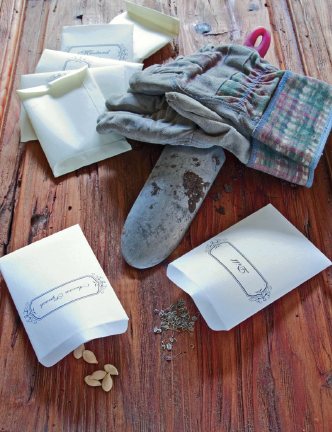

The Family Garden
Mulching in Your Garden and Yard
Start Your Own Vegetable Garden
Growing Fruit Bushes and Trees
Planting Trees for Shade or Shelter
Attracting Birds, Butterflies, and Bees to Your Garden
A Plant’s Basic Needs
Before you start a garden, it’s helpful to understand what plants need in order to thrive. Some plants, like dandelions, are tolerant of a wide variety of conditions, while others, such as orchids, have very specific requirements in order to grow successfully. Before spending time, effort, and money attempting to grow a new plant in a garden, learn about the conditions that particular plant needs in order to grow properly.
Environmental factors play a key role in the proper growth of plants. Some of the essential factors that influence this natural process are as follows:
1. Length of Day
The amount of time between sunrise and sunset is the most critical factor in regulating vegetative growth, blooming, flower development, and the initiation of dormancy. Plants utilize increasing day length as a cue to promote their growth in spring, while decreasing day length in fall prompts them to prepare for the impending cold weather. Many plants require specific day length conditions in order to bloom and flower.
2. Light
Light is the energy source for all plants. Cloudy, rainy days or any shade cast by nearby plants and structures can significantly reduce the amount of light available to the plant. In addition, plants adapted to thrive in shady spaces cannot tolerate full sunlight. In general, plants will only be able to survive where adequate sunlight reaches them at levels they are able to tolerate.
3. Temperature
Plants grow best within an optimal range of temperatures. This temperature range may vary drastically depending on the plant species. Some plants thrive in environments where the temperature range is quite wide; others can only survive within a very narrow temperature variance. Plants can only survive where temperatures allow them to carry on life-sustaining chemical reactions.
4. Cold
Plants differ by species in their ability to survive cold temperatures. Temperatures below 60°F injure some tropical plants. Conversely, arctic species can tolerate temperatures well below zero. The ability of a plant to withstand cold is a function of the degree of dormancy present in the plant and its general health. Exposure to wind, bright sunlight, or rapidly changing temperatures can also compromise a plant’s tolerance to the cold.
5. Heat
A plant’s ability to tolerate heat also varies widely from species to species. Many plants that evolved to grow in arid, tropical regions are naturally very heat tolerant, while subarctic and alpine plants show very little tolerance for heat.
This map shows the average number of days each year that an area experiences temperatures over 86 degrees (“heat days”). Zone 1 has less than one heat day and Zone 12 has more than 210 heat days. Most plants begin to suffer when it gets any hotter than 86 degrees, though different plants have different levels of tolerance.
6. Water
Different types of plants have different water needs. Some plants can tolerate drought during the summer but need winter rains in order to flourish. Other plants need a consistent supply of moisture to grow well. Careful attention to a plant’s need for supplemental water can help you to select plants that need a minimum of irrigation to perform well in your garden. If you have poorly drained, chronically wet soil, you can select lovely garden plants that naturally grow in bogs, marshlands, and other wet places.
7. Soil pH
A plant root’s ability to take up certain nutrients depends on the pH—a measure of the acidity or alkalinity—of your soil. Most plants grow best in soils that have a pH between 6.0 and 7.0. Most ericaceous plants, such as azaleas and blueberries, need acidic soils with pH below 6.0 to grow well. Lime can be used to raise the soil’s pH, and materials containing sulfates, such as aluminum sulfate and iron sulfate, can be used to lower the pH. The solubility of many trace elements is controlled by pH, and plants can only use the soluble forms of these important micronutrients.
A BASIC PLANT GLOSSARY
Annual—a plant that completes its life cycle in one year or season.
Arboretum—a landscaped space where trees, shrubs, and herbaceous plants are cultivated for scientific study or educational purposes, and to foster appreciation of plants.
Axil—the area between a leaf and the stem from which the leaf arises.
Bract—a leaflike structure that grows below a flower or cluster of flowers and is often colorful. Colored bracts attract pollinators, and are often mistaken for petals. Poinsettia and flowering dogwood are examples of plants with prominent bracts.
Cold hardy—capable of withstanding cold weather conditions.
Conifers—plants that predate true flowering plants in evolution; conifers lack true flowers and produce separate male and female strobili, or cones. Some conifers, such as yews, have fruits enclosed in a fleshy seed covering.
Cultivar—a cultivated variety of a plant selected for a feature that distinguishes it from the species from which it was selected.
Deciduous—having leaves that fall off or are shed seasonally to withstand adverse weather conditions, such as cold or drought.
Herbaceous—having little or no woody tissue. Most plants grown as perennials or annuals are herbaceous.
Hybrid—a plant, or group of plants, that results from the interbreeding of two distinct cultivars, varieties, species, or genera.
Inflorescence—a floral axis that contains many individual flowers in a specific arrangement; also known as a flower cluster.
Native plant—a plant that lives or grows naturally in a particular region without direct or indirect human intervention.
Panicle—a pyramidal, loosely branched flower cluster; a panicle is a type of inflorescence.
Perennial—persisting for several years, usually dying back to a perennial crown during the winter and initiating new growth each spring
Shrub—a low-growing, woody plant, usually less than 15 feet tall, that often has multiple stems and may have a suckering growth habit (the tendency to sprout from the root system).
Taxonomy—the study of the general principles of scientific classification, especially the orderly classification of plants and animals according to their presumed natural relationships.
Tree—a woody perennial plant having a single, usually elongated main stem, or trunk, with few or no branches on its lower part.
Wildflower—a herbaceous plant that is native to a given area and is representative of unselected forms of its species.
Woody plant—a plant with persistent woody parts that do not die back in adverse conditions. Most woody plants are trees or shrubs.
THE JUNIOR HOMESTEADER
We eat lots of different plant parts!
Foods We Eat That Are Roots
Beet
Carrot
Onion
Parsnip
Potato
Radish
Rutabaga
Sweet potato
Turnip
Yam
Foods We Eat That Are Stems
Asparagus
Bamboo shoots
Bok choy
Broccoli
Celery
Rhubarb
Foods We Eat That Are Leaves
Brussels sprouts
Cabbage
Chard
Collards
Endive
Kale
Lettuce
Mustard greens
Parsley
Spinach
Turnip greens
Watercress
Foods We Eat That Are Flowers
Broccoli
Cauliflower
Foods We Eat That Are Seeds
Black beans
Butter beans
Corn
Dry split peas
Kidney beans
Lima beans
Peas
Pinto beans
Pumpkin seeds
Sunflower seeds
Foods We Eat That Are Fruits
Apple
Apricot
Artichoke
Avocado
Banana
Bell pepper
Berries
Cucumber
Date
Eggplant
Grapefruit
Grapes
Kiwifruit
Mango
Melon
Orange
Papaya
Peach
Pear
Pineapple
Plum
Pomegranate
Pumpkin
Squash
Strawberry
Tangerine
Tomato
THE JUNIOR HOMESTEADER
You can structure your plants to double as playhouses for the kids. Here are a few possibilities:
Bean teepees are the best way to support pole bean plants, and they also make great hiding places for little gardeners. Drive five or six poles that are 7 to 8 feet tall into the ground in a circle with a 4-foot diameter. Bind the tops of the poles together with baling twine or a similar sturdy string. Plant your beans at the bottoms of the poles so they’ll grow up and create a tent of vines.
Vine tunnels can be made out of poles and any trailing vines—gourds, cucumbers, or morning glories are a few options. Drive several 7- to 8-foot poles (bamboo works well) into the ground in two parallel lines so that they create a pathway. The poles should be at least 3 feet apart from each other. Then lash horizontal poles to the vertical ones at 2-, 4-, and 6-foot heights. You can also lash poles across the top of the tunnel to connect the two sides and create a roof. Plant your trailing vines at the bases of the poles and watch your tunnel fill in as the weeks go by.
Wigwams and huts are easily fashioned by planting your sunflowers or corn in a circular or square shape. To make a whole house, plant “walls” that are a few rows thick and create several “rooms,” leaving gaps for doors.
Choosing a Site for Your Garden
Choosing the best spot for your garden is the first step toward growing the vegetables, fruits, and herbs that you want. You do not need a large space to get started—in fact, often it’s wise to start small so that you don’t get overwhelmed. A normal garden that is about 25 feet square will provide enough produce for a family of four, and with a little ingenuity (utilizing pots, hanging gardens, trellises, etc.) you can grow more than that in an even smaller space.
When planning out your garden, first sketch a diagram of what you want your garden to look like. What sorts of plants to you want to grow? Do you want a garden purely for growing vegetables or do you want to mix in some fruits, herbs, and wildflowers? Choosing the appropriate plants to grow next to each other will help your garden grow well and will provide you with ample produce throughout the growing season (see the charts on page 11). If you live in the northern hemisphere, plant taller plants at the north end of your garden so that they won’t block sunlight from reaching the smaller plants. If you live in the southern hemisphere, this is reversed.
Five Factors to Consider When Choosing a Garden Site
1. Sunlight
Sunlight is crucial for the growth of vegetables and other plants. For your garden to grow, your plants will need at least six hours of direct sunlight per day. In order to make sure your garden receives an ample amount of sunlight, don’t select a garden site that will be in the shade of trees, shrubs, houses, or other structures. Certain vegetables, such as broccoli and spinach, grow just fine in shadier spots, so if your garden does receive some shade, make sure to plant those types of vegetables in the shadier areas. However, on the whole, if your garden does not receive at least six hours of intense sunlight per day, it will not grow as efficiently or successfully.
2. Proximity
Think about convenience as you plot out your garden space. If your garden is closer to your house and easy to reach, you will be more likely to tend it on a regular basis and to harvest the produce at its peak of ripeness. You’ll find it a real boon to be able to run out to the garden in the middle of making dinner to pull up a head of lettuce or snip some fresh herbs.
3. Soil Quality
Your soil does not have to be perfect to grow a productive garden. However, it is best to have soil that is fertile, is full of organic materials that provide nutrients to the plant roots, and is easy to dig and till. Loose, well-drained soil is ideal. If there is a section of your yard where water does not easily drain after a good, soaking rain, this is not the spot for your garden; the excess water can easily drown your plants. Furthermore, soils that are of a clay or sandy consistency are not as effective in growing plants. To make these types of soils more nutrient-rich and fertile, add in organic materials (such as compost or manure).
4. Water Availability
Water is vital to keeping your garden green, healthy, and productive. A successful garden needs around 1 inch of water per week to thrive. Rain and irrigation systems are effective in maintaining this 1-inch-per-week quota. Situating your garden near a spigot or hose is ideal, allowing you to keep the soil moist and your plants happy.
If your garden is not close to your house, you may want to construct a small potting shed in which to keep your tools.
5. Elevation
Your garden should not be located in an area where air cannot circulate or where frost quickly forms. Placing your garden in a low-lying area, such as at the base of a slope, should be avoided. Lower areas do not warm as quickly in the spring, and will easily collect frost in the spring and fall. Your garden should, if at all possible, be on a slightly higher elevation. This will help protect your plants from frost and you’ll be able to start your garden growing earlier in the spring and harvest well into the fall.
Tools of the Trade
Gardening tools don’t need to be high-tech, but having the right ones on hand will make your life much easier. You’ll need a spade or digging fork to dig holes for seeds or seedlings (or, if the soil is loose enough, you can just use your hands). Use a trowel, rake, or hoe to smooth over the garden surface. A measuring stick is helpful when spacing your plants or seeds (if you don’t have a measuring stick, you can use a precut string to measure). If you are planting seedlings or established plants, you may need stakes and string to tie them up so they don’t fall over in inclement weather or when they start producing fruits or vegetables. Finally, if you are interested in installing an irrigation system for your garden, you will need to buy the appropriate materials for this purpose.
Companion Planting
Plants have natural substances built into their structures that repel or attract certain insects and can have an effect on the growth rate and even the flavor of the other plants around them. Thus, some plants aid each other’s growth when planted in close proximity and others inhibit each other. Smart companion planting will help your garden remain healthy, beautiful, and in harmony, while deterring certain insect pests and other factors that could be potentially detrimental to your garden plants.
Here is a chart that lists various types of garden vegetables, herbs, and flowers and their respective companion and “enemy” plants.
VEGETABLES
| Type | Companion plant(s) | Avoid |
| Asparagus | Tomatoes, parsley, basil | Onion, garlic, potatoes |
| Beans | Eggplant | Tomatoes, onion, kale |
| Beets | Mint | Runner beans |
| Broccoli | Onions, garlic, leeks | Tomatoes, peppers, mustard |
| Cabbage | Onions, garlic, leeks | Tomatoes, peppers, beans |
| Carrots | Leeks, beans | Radish |
| Celery | Daisies, snapdragons | Corn, aster flower |
| Corn | Legumes, squash, cucumbers | Tomatoes, celery |
| Cucumbers | Radish, beets, carrots | Tomatoes |
| Eggplant | Marigolds, mint | Runner beans |
| Leeks | Carrots | Legumes |
| Lettuce | Radish, carrots | Celery, cabbage, parsley |
| Melon | Pumpkin, squash | None |
| Peppers | Tomatoes | Beans, cabbage, kale |
| Onion | Carrots | Peas, beans |
| Peas | Beans, corn | Onions, garlic |
| Potatoes | Horseradish | Tomatoes, cucumbers |
| Tomatoes | Carrots, celery, parsley | Corn, peas, potatoes, kale |
HERBS
| Type | Companion Plant(s) | Avoid |
| Basil | Chamomile, anise | Sage |
| Chamomile | Basil, cabbage | Other herbs (it will become oily) |
| Cilantro | Beans, peas | None |
| Chives | Carrots | Peas, beans |
| Dill | Cabbage, cucumbers | Tomatoes, carrots |
| Fennel | Dill | Everything else |
| Garlic | Cucumbers, peas, lettuce | None |
| Oregano | Basil, peppers | None |
| Peppermint | Broccoli, cabbage | None |
| Rosemary | Sage, beans, carrots | None |
| Sage | Rosemary, beans | None |
| Summer savory | Onion, green beans | None |
FLOWERS
| Types | Companion Plant(s) | Avoid |
| Geraniums | Roses, tomatoes | None |
| Marigolds | Tomatoes, peppers, most plants | None |
| Petunia | Squash, asparagus | None |
| Sunflower | Corn, tomatoes | None |
| Tansy | Roses, cucumbers, squash | None |
Bleeding heart plants thrive in shady areas.
Shade-Loving Plants
Most plants thrive on several hours of direct sunlight every day, but certain plants actually prefer the shade. When buying seedlings from your local nursery or planting your own seeds, read the accompanying label or packet before planting to make sure your plants will thrive in a shadier environment.
Flowering plants that do well in partial and full shade include:
| Bee balm | Impatiens |
| Bellflower | Leopardbane |
| Bleeding heart | Lily of the valley |
| Cardinal flower | Meadow rue |
| Coleus | Pansy |
| Columbine | Periwinkle |
| Daylilies | Persian violet |
| Dichondra | Primrose |
| Ferns | Rue anemone |
| Forget-me-not | Snapdragon |
| Globe daisy | Sweet alyssum |
| Golden bleeding heart | Thyme |
Vegetable plants that can grow in partial shade include:
Arugula
Beans
Beets
Broccoli
Brussels sprouts
Cauliflower
Endive
Kale
Leaf lettuce
Peas
Radish
Spinach
Swiss chard
When planting gardens against your home, choose shade-loving plants.
THE JUNIOR HOMESTEADER
Kids as young as toddlers will enjoy being involved in a family garden. Encourage very young children to explore by touching and smelling dirt, leaves, and flowers. Just be careful they don’t taste anything non-edible. If space allows, assign a small plot for older children to plant and tend all on their own. An added bonus is that kids are more likely to eat vegetables they’ve grown themselves!
Nutrient-rich, fertile soil is essential for growing the best and healthiest plants—plants that will supply you with quality fruits, vegetables, and flowers. Sometimes soil loses its fertility (or has minimum fertility based on the region in which you live), so measures must be taken in order to improve your soil and, subsequently, your garden.
Soil Quality Indicators
Soil quality is an assessment of how well soil performs all of its functions now and how those functions are being preserved for future use. The quality of soil cannot just be determined by measuring row or garden yield, water quality, or any other single outcome, nor can it be measured directly. Thus, it is important to look at specific indicators to better understand the properties of soil. Plants can provide us with clues about how well the soil is functioning—whether a plant is growing and producing quality fruits and vegetables, or failing to yield such things, is a good indicator of the quality of the soil it’s growing in.
In short, indicators are measurable properties of soil or plants that provide clues about how well the soil can function. Indicators can be physical, chemical, and biological properties, processes, or characteristics of soils. They can also be visual features of plants.
Useful indicators of soil quality:
• are easy to measure
• measure changes in soil functions
• encompass chemical, biological, and physical properties
• are accessible to many users
• are sensitive to variations in climate and management
Indicators can be assessed by qualitative or quantitative techniques, such as soil tests. After measurements are collected, they can be evaluated by looking for patterns and comparing results to measurements taken at a different time.
Examples of soil quality indicators:
1. Soil Organic Matter—promotes soil fertility, structure, stability, and nutrient retention and helps combat soil erosion.
2. Physical Indicators—these include soil structure, depth, infiltration and bulk density, and water hold capacity. Quality soil will retain and transport water and nutrients effectively; it will provide habitat for microbes; it will promote compaction and water movement; and, it will be porous and easy to work with.
3. Chemical Indicators—these include pH, electrical conductivity, and extractable nutrients. Quality soil will be at its threshold for plant, microbial, biological, and chemical activity; it will also have plant nutrients that are readily available.
4. Biological Indicators—these include microbial biomass, mineralizable nitrogen, and soil respiration. Quality soil is a good repository for nitrogen and other basic nutrients for prosperous plant growth; it has a high soil productivity and nitrogen supply; and there is a good amount of microbial activity.
Soil and Plant Nutrients
Nutrient Management
There are twenty nutrients that all plants require. Six of the most important nutrients, called macronutrients, are: calcium, magnesium, nitrogen, phosphorous, potassium, and sulfur. Of these, nitrogen, phosphorus, and potassium are essential to healthy plant growth and are required in relatively large amounts. Nitrogen is associated with lush vegetative growth, phosphorus is required for flowering and fruiting, and potassium is necessary for durability and disease resistance. Calcium, sulfur, and magnesium are also required in comparatively large quantities and aid in the overall health of plants.
The other nutrients, referred to as micronutrients, are required in very small amounts. These include such elements as copper, zinc, iron, and boron. While both macro- and micronutrients are required for good plant growth, over-application of these nutrients can be as detrimental to the plant as a deficiency of them. Over-application of plant nutrients may not only impair plant growth, but may also contaminate groundwater by penetrating through the soil or may pollute surface waters.
Soil Testing
Testing your soil for nutrients and pH is important in order to provide your plants with the proper balance of nutrients (while avoiding over-application). If you are establishing a new lawn or garden, a soil test is strongly recommended. The cost of soil testing is minor in comparison to the cost of plant materials and labor. Correcting a problem before planting is much simpler and cheaper than afterwards.
Once your garden is established, continue to take periodic soil samples. While many people routinely lime their soil, this can raise the pH of the soil too high. Likewise, since many fertilizers tend to lower the soil’s pH, it may drop below desirable levels after several years, depending on fertilization and other soil factors, so occasional testing is strongly encouraged.
Home tests for pH, nitrogen, phosphorus, and potassium are available from most garden centers. While these may give you a general idea of the nutrients in your soil, they are not as reliable as tests performed by the Cooperative Extension Service at land grant universities. University and other commercial testing services will provide more detail, and you can request special tests for micronutrients if you suspect a problem. In addition to the analysis of nutrients in your soil, these services often provide recommendations for the application of nutrients or how best to adjust the pH of your soil.
The test for soil pH is very simple. pH is a measure of how acidic or alkaline your soil is. A pH of 7 is considered neutral. Below 7 is acidic and above 7 is alkaline. Since pH greatly influences plant nutrients, adjusting the pH will often correct a nutrient problem. At a high pH, several of the micronutrients become less available for plant uptake. Iron deficiency is a common problem, even at a neutral pH, for such plants as rhododendrons and blueberries. At a very low soil pH, other micronutrients may be too available to the plant, resulting in toxicity.
Phosphorus and potassium are tested regularly by commercial testing labs. While there are soil tests for nitrogen, these may be less reliable. Nitrogen is present in the soil in several forms that can change rapidly. Therefore, a precise analysis of nitrogen is more difficult to obtain. Most university soil test labs do not routinely test for nitrogen. Home testing kits often contain a test for nitrogen that may give you a general, though not necessarily completely accurate, idea of the presence of nitrogen in your garden soil.
Organic matter is often part of a soil test. Organic matter has a large influence on soil structure and so is highly desirable for your garden soil. Good soil structure improves aeration, water movement, and retention. This encourages increased microbial activity and root growth, both of which influence the availability of nutrients for plant growth. Soils high in organic matter tend to have a greater supply of plant nutrients compared to many soils low in organic matter. Organic matter tends to bind up some soil pesticides, reducing their effectiveness, and so this should be taken into consideration if you are planning to apply pesticides in your garden.
Tests for micronutrients are usually not performed unless there is reason to suspect a problem. Certain plants have greater requirements for specific micronutrients and may show deficiency symptoms if those nutrients are not readily available.
STEPS FOR TAKING A SOIL TEST
1. If you intend to send your sample to the land grant university in your state, contact the local Cooperative Extension Service for information and sample bags. If you intend to send your sample to a private testing lab, contact them for specific details about submitting a sample.
2. Follow the directions carefully for submitting the sample. The following are general guidelines for taking a soil sample:
• Sample when the soil is moist but not wet.
• Obtain a clean pail or similar container.
• Clear away the surface litter or grass.
• With a spade or soil auger, dig a small amount of soil to a depth of 6 inches.
• Place the soil in the clean pail.
• Repeat steps 3 through 5 until the required number of samples has been collected.
• Mix the samples together thoroughly.
• From the mixture, take the sample that will be sent for analysis.
• Send immediately. Do not dry before sending.
3. If you are using a home soil testing kit, follow the above steps for taking your sample. Follow the directions in the test kit carefully so you receive the most accurate reading possible.
Organic and Commercial Fertilizers and Returning Nutrients to Your Soil
Once you have the results of the soil test, you can add nutrients or soil amendments as needed to alter the pH. If you need to raise the soil’s pH, use lime. Lime is most effective when it is mixed into the soil; therefore, it is best to apply before planting (if you apply lime in the fall, it has a better chance of correcting any soil acidity problems for the next growing season). For large areas, rototilling is most effective. For small areas or around plants, working the lime into the soil with a spade or cultivator is preferable. When working around plants, be careful not to dig too deeply or roughly so that you damage plant roots. Depending on the form of lime and the soil conditions, the change in pH may be gradual. It may take several months before a significant change is noted. Soils high in organic matter and clay tend to take larger amounts of lime to change the pH than do sandy soils.
If you need to lower the pH significantly, especially for plants such as rhododendrons, you can use aluminum sulfate. In all cases, follow the soil test or manufacturer’s recommended rates of application. Again, mixing well into the soil is recommended.
There are numerous choices for providing nitrogen, phosphorus, and potassium, the nutrients your plants need to thrive. Nitrogen (N) is needed for healthy, green growth and regulation of other nutrients. Phosphorus (P) helps roots and seeds properly develop and resist disease. Potassium (K) is also important in root development and disease resistance. If your soil is of adequate fertility, applying compost may be the best method of introducing additional nutrients. While compost is relatively low in nutrients compared to commercial fertilizers, it is especially beneficial in improving the condition of the soil and is nontoxic. By keeping the soil loose, compost allows plant roots to grow well throughout the soil, helping them to extract nutrients from a larger area. A loose soil enriched with compost is also an excellent habitat for earthworms and other beneficial soil microorganisms that are essential for releasing nutrients for plant use. The nutrients from compost are also released slowly, so there is no concern about “burning” the plant with an over-application of synthetic fertilizer.
Manure is also an excellent source of plant nutrients and is an organic matter. Manure should be composted before applying, as fresh manure may be too strong and can injure plants. Be careful when composting manure. If left in the open, exposed to rain, nutrients may leach out of the manure and the runoff can contaminate nearby waterways. Make sure the manure is stored in a location away from wells and any waterways and that any runoff is confined or slowly released into a vegetated area. Improperly applied manure also can be a source of pollution. If you are not composting your own manure, you can purchase some at your local garden store. For best results, work composted manure into the soil around the plants or in your garden before planting.
If preparing a bed before planting, compost and manure may be worked into the soil to a depth of 8 to 12 inches. If adding to existing plants, work carefully around the plants so as not to harm the existing roots.
Green manures are another source of organic matter and plant nutrients. Green manures are crops that are grown and then tilled into the soil. As they break down, nitrogen and other plant nutrients become available. These manures may also provide additional benefits of reducing soil erosion. Green manures, such as rye and oats, are often planted in the fall after the crops have been harvested. In the spring, these are tilled under before planting.
With all organic sources of nitrogen, whether compost or manure, the nitrogen must be changed to an inorganic form before the plants can use it. Therefore, it is important to have well-drained, aerated soils that provide the favorable habitat for the soil microorganisms responsible for these conversions.
There are also numerous sources of commercial fertilizers that supply nitrogen, phosphorus, and potassium, though it is preferable to use organic fertilizers, such as compost and manures. However, if you choose to use a commercial fertilizer, it is important to know how to read the amount of nutrients contained in each bag. The first number on the fertilizer analysis is the percentage of nitrogen; the second number is phosphorus; and the third number is the potassium content. A fertilizer that has a 10-20-10 analysis contains twice as much of each of the nutrients as a 5-10-5. How much of each nutrient you need depends on your soil test results and the plants you are fertilizing.
As mentioned before, nitrogen stimulates vegetative growth while phosphorus stimulates flowering. Too much nitrogen can inhibit flowering and fruit production. For many flowers and vegetables, a fertilizer higher in phosphorus than nitrogen is preferred, such as a 5-10-5. For lawns, nitrogen is usually required in greater amounts, so a fertilizer with a greater amount of nitrogen is more beneficial.
Fertilizer Application
Commercial fertilizers are normally applied as a dry, granular material or mixed with water and poured onto the garden. If using granular materials, avoid spilling on sidewalks and driveways because these materials are water soluble and can cause pollution problems if rinsed into storm sewers. Granular fertilizers are a type of salt, and if applied too heavily, they have the capability of burning the plants. If using a liquid fertilizer, apply directly to or around the base of each plant and try to contain it within the garden only.
In order to decrease the potential for pollution and to gain the greatest benefits from fertilizer, whether it’s a commercial variety, compost, or other organic materials, apply it when the plants have the greatest need for the nutrients. Plants that are not actively growing do not have a high requirement for nutrients; thus, nutrients applied to dormant plants, or plants growing slowly due to cool temperatures, are more likely to be wasted. While light applications of nitrogen may be recommended for lawns in the fall, generally, nitrogen fertilizers should not be applied to most plants in the fall in regions of the country that experience cold winters. Since nitrogen encourages vegetative growth, if it is applied in the fall it may reduce the plant’s ability to harden properly for winter.
In some gardens, you can reduce fertilizer use by applying it around the individual plants rather than broadcasting it across the entire garden. Much of the phosphorus in fertilizer becomes unavailable to the plants once spread on the soil. For better plant uptake, apply the fertilizer in a band near the plant. Do not apply directly to the plant or in contact with the roots, as it may burn and damage the plant and its root system.
Rules of Thumb for Proper Fertilizer Use
It is easiest to apply fertilizer before or at the time of planting. Fertilizers can either be spread over a large area or confined to garden rows, depending on the condition of your soil and the types of plants you will be growing. After spreading, till the fertilizer into the soil about 3 to 4 inches deep. Only spread about one half of the fertilizer this way and then dispatch the rest 3 inches to the sides of each row and also a little below each seed or established plant. This method, minus the spreader, is used when applying fertilizer to specific rows or plants by hand.
Composting in Your Backyard
Composting is nature’s own way of recycling yard and household wastes by converting them into valuable fertilizer, soil organic matter, and a source of plant nutrients. The result of this controlled decomposition of organic matter—a dark, crumbly, earthy-smelling material—works wonders on all kinds of soil by providing vital nutrients, and contributing to good aeration and moisture-holding capacity, to help plants grow and look better.
Composting can be as simple or as involved as you would like, depending on how much yard waste you have, how fast you want results, and the effort you are willing to invest. Since all organic matter eventually decomposes, composting speeds up the process by providing an ideal environment for bacteria and other decomposing micro-organisms. The composting season coincides with the growing season, when conditions are favorable for plant growth, so those same conditions work well for biological activity in the compost pile. However, since compost generates heat, the process may continue later into the fall or winter. The final product—called humus or compost—looks and feels like fertile garden soil.
| Soil Test Reading | What to Do |
| High pH | Your soil is alkaline. To lower pH, add elemental sulfur, gypsum, or cottonseed meal. Sulfur can take several months to lower your soil’s pH, as it must first convert to sulfuric acid with the help of the soil’s bacteria. |
| Low pH | Your soil is too acidic. Add lime or wood ashes. |
| Low nitrogen | Add manure, horn or hoof meal, cottonseed meal, fish meal, or dried blood. |
| High nitrogen | Your soil may be over-fertilized. Water the soil frequently and don’t add any fertilizer. |
| Low phosphorus | Add cottonseed meal, bonemeal, fish meal, rock phosphate, dried blood, or wood ashes. |
| High phosphorous | Your soil may be over-fertilized. Avoid adding phosphorous-rich materials and grow lots of plants to use up the excess. |
| Low potassium | Add potash, wood ashes, manure, dried seaweed, fish meal, or cottonseed meal. |
| High potassium | Continue to fertilize with nitrogen and phosphorous-rich soil additions, but avoid potassium-rich fertilizers for at least two years. |
| Poor drainage or too much drainage | If your soil is a heavy, clay-like consistency, it won’t drain well. If it’s too sandy, it won’t absorb nutrients as it should. Mix in peat moss or compost to achieve a better texture. |
HOW TO PROPERLY APPLY FERTILIZER TO YOUR GARDEN
Apply fertilizer when the soil is moist, and then water lightly. This will help the fertilizer move into the root zone where its nutrients are available to the plants, rather than staying on top of the soil where it can be blown or washed away.
Watch the weather. Avoid applying fertilizer immediately before a heavy rain system is predicted to arrive. Too much rain (or sprinkler water) will take the nutrients away from the lawn’s root zone and could move the fertilizer into another water system, contaminating it.
Use the minimum amount of fertilizer necessary and apply it in small, frequent applications. An application of two pounds of fertilizer, five times per year, is better than five pounds of fertilizer twice a year.
If you are spreading the fertilizer by hand in your garden, wear gardening gloves and be sure not to damage the plant or roots around which you are fertilizing.
Compost Preparation
While a multitude of organisms, fungi, and bacteria are involved in the overall process, there are four basic ingredients for composting: nitrogen, carbon, water, and air.
A wide range of materials may be composted because anything that was once alive will naturally decompose. The starting materials for composting, commonly referred to as feed stocks, include leaves, grass clippings, straw, vegetable and fruit scraps, coffee grounds, livestock manure, sawdust, and shredded paper. However, some materials that always should be avoided include diseased plants, dead animals, noxious weeds, meat scraps that may attract animals, and dog or cat manure, which can carry disease. Since adding kitchen wastes to compost may attract flies and insects, make a hole in the center of your pile and bury the waste.
THE JUNIOR HOMESTEADER
Compost Lasagna
Watch your produce scraps decompose! And see how some materials don’t.
Things You’ll Need:
1 2-liter clear plastic bottle
2 cups fruit and vegetable scraps
1 cup grass clippings and leaves
2 cups soil
Newspaper clippings or shredded paper
Styrofoam packing peanuts
Magic marker
Layer all your ingredients, just like you’d make a lasagna. Start with a couple inches of soil, then add the produce scraps, then more dirt, then the grass clippings and leaves, more dirt, the Styrofoam, more dirt, the shredded paper, and top it all off with a little more dirt.
Use the magic marker to mark the top of the top layer. Then place the bottle upright in a windowsill or another sunny spot. If there’s a lot of condensation in the bottle, open the top to let it air out.
Once a week for four weeks check on the bottle and notice how the level of the dirt has changed. Mark it with the marker.
At the end of four weeks, dump the bottle out in a garden spot that hasn’t been planted, or add it to your compost pile. Notice which items decomposed the most. Remove the items that didn’t decompose and discard them in the trash.
For best results, you will want an even ratio of green, or wet, material, which is high in nitrogen, and brown, or dry, material, which is high in carbon. Simply layer or mix landscape trimmings and grass clippings, for example, with dried leaves and twigs in a pile or enclosure. If there is not a good supply of nitrogen-rich material, a handful of general lawn fertilizer or barnyard manure will help even out the ratio.
Though rain provides the moisture, you may need to water the pile in dry weather or cover it in extremely wet weather. The microorganisms in the compost pile function best when the materials are as damp as a wrung-out sponge—not saturated with water. A moisture content of 40 to 60 percent is preferable. To test for adequate moisture, reach into your compost pile, grab a handful of material, and squeeze it. If a few drops of water come out, it probably has enough moisture. If it doesn’t, add water by putting a hose into the pile so that you aren’t just wetting the top, or, better yet, water the pile as you turn it.
Air is the only part that cannot be added in excess. For proper aeration, you’ll need to punch holes in the pile so it has many air passages. The air in the pile is usually used up faster than the moisture, and extremes of sun or rain can adversely affect this balance, so the materials must be turned or mixed up often with a pitchfork, rake, or other garden tool to add air that will sustain high temperatures, control odor, and yield faster decomposition.
Over time, you’ll see that the microorganisms, which are small forms of plant and animal life, will break down the organic material. Bacteria are the first to break down plant tissue and are the most numerous and effective compost-makers in your compost pile. Fungi and protozoans soon join the bacteria and, somewhat later in the cycle, centipedes, millipedes, beetles, sow bugs, nematodes, worms, and numerous others complete the composting process. With the right ingredients and favorable weather conditions, you can have a finished compost pile in a few weeks.
How to Make Your Own Backyard Composting Heap
1. Choose a level, well-drained site, preferably near your garden.
2. Decide whether you will be using a bin after checking on any local or state regulations for composting in urban areas, as some communities require rodent-proof bins. There are numerous styles of compost bins available, depending on your needs, ranging from a moveable bin formed by wire mesh to a more substantial wooden structure consisting of several compartments. You can easily make your own bin using chicken wire or scrap wood. While a bin will help contain the pile, it is not absolutely necessary, as you can build your pile directly on the ground. To help with aeration, you may want to place some woody material on the ground where you will build your pile.
3. Ensure that your pile will have a minimum dimension of 3 feet all around, but is no taller than 5 feet, as not enough air will reach the microorganisms at the center if it is too tall. If you don’t have this amount at one time, simply stockpile your materials until a sufficient quantity is available for proper mixing. When composting is completed, the total volume of the original materials is usually reduced by 30 to 50 percent.
4. Build your pile by using either alternating equal layers of high-carbon and high-nitrogen material or by mixing equal parts of both together and then heaping it into a pile. If you choose to alternate layers, make each layer 2 to 4 inches thick. Some composters find that mixing the two together is more effective than layering. Adding a few shovels of soil will also help get the pile off to a good start because soil adds commonly found, decomposing organisms to your compost.
5. Keep the pile moist but not wet. Soggy piles encourage the growth of organisms that can live without oxygen and cause unpleasant odors.
6. Punch holes in the sides of the pile for aeration. The pile will heat up and then begin to cool. The most efficient decomposing bacteria thrive in temperatures between 110 and 160 degrees Fahrenheit. You can track this with a compost thermometer, or you can simply reach into the pile to determine if it is uncomfortably hot to the touch. At these temperatures, the pile kills most weed seeds and plant diseases. However, studies have shown that compost produced at these temperatures has less ability to suppress diseases in the soil, since these temperatures may kill some of the beneficial bacteria necessary to suppress disease.
8. Check your bin regularly during the composting season to assure optimum moisture and aeration are present in the material being composted.
9. Move materials from the center to the outside of the pile and vice versa. Turn every day or two and you should get compost in less than four weeks. Turning every other week will make compost in one to three months. Finished compost will smell sweet and be cool and crumbly to the touch.
COMMON COMPOSTING MATERIALS
Cardboard
Coffee grounds
Corn cobs
Corn stalks
Food scraps
Grass clippings
Hedge trimmings
Livestock manure
Newspapers
Old potting soil
Plant stalks
Pine needles
Sawdust
Seaweed
Shredded paper
Straw
Tea bags
Telephone books
Tree leaves and twigs
Vegetable scraps
Weeds without seed heads
Wood chips
Woody brush
Avoid using:
Bread and grains
Cooking oil
Dairy products
Dead animals
Diseased plant material
Dog or cat manure
Grease or oily foods
Meat or fish scraps
Noxious or invasive weeds
Weeds with seed heads
Other Types of Composting
Cold or Slow Composting
Cold composting allows you to pile just organic material on the ground or in a bin. This method requires no maintenance, but it will take several months to a year or more for the pile to decompose, though the process is faster in warmer climates than in cooler areas. Cold composting works well if you are short on time needed to tend to the compost pile at least every other day, have little yard waste, and are not in a hurry to use the compost.
For this method, add yard waste as it accumulates. To speed up the process, shred or chop the materials by running over small piles of trimmings with your lawn mower, because the more surface area the microorganisms have to feed on, the faster the materials will break down.
Cold composting has been shown to be better at suppressing soil-borne diseases than hot composting and also leaves more non-decomposed bits of material, which can be screened out if desired. However, because of the low temperatures achieved during decomposition, weed seeds and disease-causing organisms may not be destroyed.
Vermicomposting
Vermicomposting uses worms to compost. This takes up very little space and can be done year-round in a basement or garage. It is an excellent way to dispose of kitchen wastes.
Here’s how to make your own vermicomposting pile:
1. Obtain a plastic storage bin. One bin measuring 1 foot by 2 feet by 3½ feet will be enough to meet the needs of a family of six.
2. Drill eight to ten holes about ¼ inch in diameter in the bottom of the bin for drainage.
3. Line the bottom of the bin with a fine nylon mesh to keep the worms from escaping.
4. Put a tray underneath to catch the drainage.
5. Rip shredded newspaper into pieces to use as bedding and pour water over the strips until they are thoroughly moist. Place these shredded bits on one side of your bin. Do not let them dry out.
6. Add worms to your bin. It’s best to have about two pounds of worms (roughly 2,000 worms) per one pound of food waste. You may want to start with less food waste and increase the amount as your worm population grows. Redworms are recommended for best composting, but other species can be used. Redworms are the common, small worms found in most gardens and lawns. You can collect them from under a pile of mulch or order them from a garden catalog.
7. Provide worms with food wastes such as vegetable peelings. Do not add fat or meat products. Limit their feed, as too much at once may cause the material to rot.
Any large bucket can be turned into a compost barrel. You can cut out a piece of the barrel for easy access to the compost, as shown here, or simply access the compost through the lid. Drilling holes in the sides and lid of the bucket will increase air circulation and speed up the process. Leave your bucket in the sun and shake it, roll it, or stir the contents regularly.
THE JUNIOR HOMESTEADER
Let the kids be in charge of feeding the worms in your compost. They’ll be fascinated by the squirmy critters!
8. Keep the bin in a dark location away from extreme temperatures.
9. Wait about three months and you’ll see that the worms have changed the bedding and food wastes into compost. At this time, open your bin in a bright light and the worms will burrow into the bedding. Add fresh bedding and more food to the other side of the bin. The worms should migrate to the new food supply.
10. Scoop out the finished compost and apply to your plants or save to use in the spring.
Common Problems
Composting is not an exact science. Experience will tell you what works best for you. If you notice that nothing is happening, you may need to add more nitrogen, water, or air; chip or grind the materials; or adjust the size of the pile.
If the pile is too hot, you probably have too much nitrogen and need to add additional carbon materials to reduce the heating.
A bad smell may indicate not enough air or too much moisture. Simply turn the pile or add dry materials to the wet pile to get rid of the odor.
Uses for Compost
Compost contains nutrients, but it is not a substitute for fertilizers. Compost holds nutrients in the soil until plants can use them, loosens and aerates clay soils, and retains water in sandy soils.
To use as a soil amendment, mix 2 to 5 inches of compost into vegetable and flower gardens each year before planting. In a potting mixture, add one part compost to two parts commercial potting soil, or make your own mixture by using equal parts of compost and sand or Perlite.
As a mulch, spread an inch or two of compost around annual flowers and vegetables, and up to 6 inches around trees and shrubs. Studies have shown that compost used as mulch, or mixed with the top 1-inch layer of soil, can help prevent some plant diseases, including some of those that cause damping of seedlings.
As a top dressing, mix finely sifted compost with sand and sprinkle evenly over lawns.
Once you’ve chosen a spot for your garden (as well as the size you want to make your garden bed), and prepared the soil with compost or other fertilizer, it’s time to start planting. Find seeds at your local garden center, browse through seed catalogs, and order seeds that will do well in your area. Alternatively, you can start with bedding plants (or seedlings) available at nurseries and garden centers.
Read the instructions on the back of the seed package or on the plastic tag in your plant pot. You may have to ask experts when to plant the seeds if this information is not stated on the back of the package. Some seeds (such as tomatoes) should be started indoors in small pots or seed trays before the last frost, and only transplanted outdoors when the weather warms up. For established plants or seedlings, be sure to plant as directed on the plant tag or consult your local nursery about the best planting times.
Seedlings
If you live in a cooler region with a shorter growing period, you will want to start some of your plants indoors. To do this, obtain plug flats (trays separated into many small cups or “cells”) or make your own small planters by poking holes in the bottoms of paper cups. Fill the cups two-thirds full with potting soil or composted soil. Bury the seed at the recommended depth, according to the instructions on the package. Tamp down the soil lightly and water. Keep the seedlings in a warm, well-lit place, such as the kitchen, to encourage germination.
Once the weather begins to warm up and you are fairly certain you won’t be getting any more frosts (you can contact your local extension office to find out the “frost free” date for your area) you can begin to acclimate your seedlings to the great outdoors. First, place them in a partially shady spot outdoors that is protected from strong wind. After a couple of days, move them into direct sunlight, and finally, transplant them to the garden.
Follow these plans to make your own propagation rack for starting seeds indoors. Though a propagation rack is not necessary, it will help to ensure your seedlings receive the light and warmth they need to stay strong and healthy.
SPROUTING SEEDS FOR EATING
Seeds can be sprouted and eaten on sandwiches, salads, or stir-fries any time of the year. They are delicious and full of vitamins and proteins. Mung beans, soybeans, alfalfa, wheat, corn, barley, mustard, clover, chickpeas, radishes, and lentils all make good sprouts. Find seeds for sprouting from your local health food store or use dried peas, beans, or lentils from the grocery store. Never use seeds intended for planting unless you’ve harvested the seeds yourself—commercially available planting seeds are often treated with a poisonous chemical fungicide.
To grow sprouts, thoroughly rinse and strain the seeds, then place in a glass jar, cover with cheesecloth secured with a rubber band, and soak overnight in cool water. You’ll need about four times as much water as you have seeds. Drain the seeds by turning the jar upside down and allowing the water to escape through the cheesecloth. Keep the seeds at 60 to 80ºF and rinse twice a day, draining them thoroughly after every rinse. Once sprouts are 1 to 1 ½ inches long (generally after three to five days), they are ready to eat.
RECOMMENDED PLANTS TO START AS SEEDLINGS
HOMESCHOOL HINT
How do different treatments change how fast seeds sprout?
Experiment with sprouting seeds under different temperatures, or after being soaked for different times or in different liquids. Or, see how one kind of treatment affects different types of seeds. What makes seeds sprout the fastest? Do some look healthier than others? Write up a lab report to document your findings.
How Best to Water Your Soil
After your seeds or seedlings are planted, the next step is to water your soil. Different soil types have different watering needs. You don’t need to be a soil scientist to know how to water your soil properly. Here are some tips that can help to make your soil moist and primed for gardening:
1. Loosen the soil around plants so water and nutrients can be quickly absorbed.
2. Use a 1- to 2-inch protective layer of mulch on the soil surface above the root area. Cultivating and mulching help reduce evaporation and soil erosion.
3. Water your plants at the appropriate time of day. Early morning or night is the best time for watering, as evaporation is less likely to occur at these times.
4. Do not water your plants when it is extremely windy outside. Wind will prevent the water from reaching the soil where you want it to go.
Types of Soil and Their Water Retention
Knowing the type of soil you are planting in will help you best understand how to properly water and grow your garden plants. Three common types of soil and their various abilities to absorb water are listed below:
1. Clay Soil
In order to make this type of soil more loamy, add organic materials, such as compost, peat moss, and well-rotted leaves, in the spring before growing and also in the fall after harvesting your vegetables and fruits. Adding these organic materials allows this type of soil to hold more nutrients for healthy plant growth. Till or spade to help loosen the soil.
Since clay soil absorbs water very slowly, water only as fast as the soil can absorb the water.
2. Sandy Soil
As with clay soil, adding organic materials in the spring and fall will help supplement the sandy soil and promote better plant growth and water absorption.
Left on its own (with no added organic matter), the water will run through sandy soil so quickly that plants won’t be able to absorb it through their roots and will fail to grow and thrive.
3. Loam Soil
This is the best kind of soil for gardening. It’s a combination of sand, silt, and clay. Loam soil is fertile, deep, easily crumbles, and contains organic matter. It will help promote the growth of quality fruits and vegetables, as well as flowers and other plants.
Loam absorbs water readily and stores it for plants to use. Water as frequently as the soil needs to maintain its moisture and to promote plant growth.
Wise use of water for hydrating your garden and lawn not only helps protect the environment, but saves money and also provides optimum growing conditions for your plants. There are simple ways of reducing the amount of water used for irrigation, such as growing xeriphytic species (plants that are adapted to dry conditions), mulching, adding water-retaining organic matter to the soil, and installing windbreaks and fences to slow winds and reduce evapotranspiration.
You can conserve water by watering your plants and lawn in the early morning, before the sun is too intense. This helps reduce the amount of water lost due to evaporation. Furthermore, installing rain gutters and collecting water from downspouts—in collection bins such as rain barrels—also helps reduce water use.
How Plants Use Water
Water is a critical component of photosynthesis, the process by which plants manufacture their own food from carbon dioxide and water in the presence of light. Water is one of the many factors that can limit plant growth. Other important factors include nutrients, temperature, and amount and duration of sunlight.
Plants take in carbon dioxide through their stomata—microscopic openings on the undersides of the leaves. The stomata are also the place where water is lost, in a process called transpiration. Transpiration, along with evaporation from the soil’s surface, accounts for most of the moisture lost from the soil and subsequently from the plants.
When there is a lack of water in the plant tissue, the stomata close to try to limit excessive water loss. If the tissues lose too much water, the plant will wilt. Plants adapted to dry conditions have developed numerous mechanisms for reducing water loss—they typically have narrow, hairy leaves and thick, fleshy stems and leaves. Pines, hemlocks, and junipers are also well adapted to survive extended periods of dry conditions—an environmental factor they encounter each winter when the frozen soil prevents the uptake of water. Cacti, which have thick stems and leaves reduced to spines, are the best example of plants well adapted to extremely dry environments.
Choosing Plants for Low Water Use
You are not limited to cacti, succulents, or narrow-leafed evergreens when selecting plants adapted to low water requirements. Many plants growing in humid environments are well adapted to low levels of soil moisture. Numerous plants found growing in coastal or mountainous regions have developed mechanisms for dealing with extremely sandy, excessively well-drained soils or rocky, cold soils in which moisture is limited for months at a time. Try alfalfa, aloe, artichokes, asparagus, blue hibiscus, chives, columbine, eucalyptus, garlic, germander, lamb’s ear, lavender, ornamental grasses, prairie turnip, rosemary, sage, sedum, shrub roses, thyme, yarrow, yucca, and verbena.
THE JUNIOR HOMESTEADER
See what happens when a plant (or part of a plant) doesn’t get any light!
1. Cut three paper shapes about 2 inches by 2 inches. Circles and triangles work well, but you can experiment with other shapes, too. Clip them to the leaves of a plant, preferably one with large leaves. Either an indoor or an outdoor plant will do. Be very careful not to damage the plant.
2. Leave one paper cutout on for one day, a second on for two days, and a third on for a week. How long does it take for the plant to react? How long does it take for the plant to return to normal?
Photosynthesis means to “put together using light.” Plants use sunlight to turn carbon dioxide and water into food. Plants need all of these to remain healthy. When the plant gets enough of these things, it produces a simple sugar, which it uses immediately or stores in a converted form of starch. We don’t know exactly how this happens. But we do know that chlorophyll, the green substance in plants, helps it to occur.
Succulent plants retain water and can therefore thrive in arid environments.
Garlic plants
THE JUNIOR HOMESTEADER
Did you ever wonder how water gets from a plant’s roots to its leaves? The name for this is “capillary action.”
Things You’ll Need:
4 same-size stalks of fresh celery with leaves
4 cups or glasses
Red and blue food coloring
A measuring cup
4 paper towels
A vegetable peeler
A ruler
Some old newspapers
What to Do:
1. Lay the four pieces of celery in a row on a cutting board or counter so that the place where the stalks and the leaves meet matches up.
2. Cut all four stalks of celery four inches (about 10 centimeters) below where the stalks and leaves meet.
3. Put the four stalks in four separate cups of purple water (use 10 drops of red and 10 drops of blue food coloring for each half cup of water).
4. Label four paper towels in the following way: “2 hours,” “4 hours,” “6 hours,” and “8 hours.” (You may need newspapers under the towels.)
5. Every two hours from the time you put the celery into the cups, remove one of the stalks and put it onto the correct towel. (Notice how long it takes for the leaves to start to change.)
6. Each time you remove a stalk from the water, carefully peel the rounded part with a vegetable peeler to see how far up the stalk the purple water has traveled.
7. What do you observe? Notice how fast the water climbs the celery. Does this change as time goes by? In what way?
8. Measure the distance the water has traveled and record this amount.
9. Make a list of other objects around your house or in nature that enable liquids to climb by capillary action. Look for paper towels, sponges, old sweat socks, brown paper bags, and flowers. What other items can you find?
Capillary action happens when water molecules are more attracted to the surface they travel along than to each other. In paper towels, the molecules move along tiny fibers. In plants, they move through narrow tubes that are actually called capillaries. Plants couldn’t survive without capillaries because they use the water to make their food.
Trickle Irrigation Systems
Trickle irrigation and drip irrigation systems help reduce water use and successfully meet the needs of most plants. With these systems, very small amounts of water are supplied to the bases of the plants. Since the water is applied directly to the soil—rather than onto the plant—evaporation from the leaf surfaces is reduced, thus allowing more water to effectively reach the roots. In these types of systems, the water is not wasted by being spread all over the garden; rather, it is applied directly to the appropriate source.
A simple trickle irrigation system.
Installing Irrigation Systems
An irrigation system can be easy to install, and there are many different products available for home irrigation systems. The simplest system consists of a soaker hose that is laid out around the plants and connected to an outdoor spigot. No installation is required, and the hose can be moved as needed to water the entire garden.
A slightly more sophisticated system is a slotted pipe system. Here are the steps needed in order to install this type of irrigation system in your garden:
1. Sketch the layout of your garden so you know what materials you will need. If you intend to water a vegetable garden, you may want one pipe next to every row or one pipe between every two rows.
2. Depending on the layout and type of garden, purchase the required lengths of pipe. You will need a length of solid pipe for the width of your garden, and perforated pipes that are the length of your lateral rows (and remember to buy one pipe for each row or two).
3. Measure the distances between rows and cut the solid pipe to the proper lengths.
4. Place T-connectors between the pieces of solid pipe.
5. In the approximate center of the solid pipe, place a T-connector to which a hose connector will be fitted.
6. Cut the perforated pipe to the length of the rows.
7. Attach the perforated pipes to the T-connectors so that the perforations are facing downward. Cap the ends of the pipes.
A slotted pipe irrigation system.
8. Connect a garden hose to the hose connector on the solid pipe. Adjust the pressure of the water flowing from the spigot until the water slowly emerges from each of the perforated pipes. And now you have a slotted pipe irrigation system for your garden.
Rain Barrels
Another very efficient and easy way to conserve water—and save money—is to buy or make your own rain barrel. A rain barrel is a large bin that is placed beneath a downspout and collects rainwater runoff from a roof. The water collected in the rain barrel can then be routed through a garden hose and used to water your garden and lawn.
Rain barrels can be purchased from specialty home and garden stores, but a simple rain barrel is also quite easy to make. Below are simple instructions on how to make your own rain barrel.
How to Make a Simple Rain Barrel
Instructions:
1. Obtain a suitable plastic barrel, a large plastic trash can with a lid, or a wooden barrel (e.g., a wine barrel) that has not been stored dry for too many seasons, since it can start to leak. Good places to find plastic barrels include suppliers of dairy products, metal plating companies, and bulk food suppliers. Just be sure that nothing toxic or harmful to plants and animals (including you!) was stored in the barrel. A wine barrel can be obtained through a winery. Barrels that allow less light to penetrate through will minimize the risk of algae growth and the establishment of other microorganisms.
2. Once you have your barrel, find a location for it under or near one of your home’s downspouts. In order for the barrel to fit, you will probably need to shorten the downspout by a few feet. You can do this by removing the screws or rivets located at a joint of the downspout, or by simply cutting off the last few feet with a hacksaw or other cutter. If your barrel will not be able to fit underneath the downspout, you can purchase a flexible downspout at your local home improvement store. These flexible tubes will direct the water from the downspout into the barrel. An alternative, and aesthetically appealing, option is to use a rain chain—a large, metal chain that water can run down.
THINGS YOU’LL NEED
• A clean plastic barrel, tall trash can with lid, or a wooden barrel that does not leak—a 55-gallon plastic drum or barrel does a very good job at holding rainwater
• Two hose bibs (a valve with a fitting for a garden hose on one end and a flange with a short pipe sticking out of it at the other end)
• Garden hose
• Plywood and paint (if your barrel doesn’t already have a top)
• Window screen
• Wood screws
• A drill
• A hacksaw
• A screwdriver
3. Create a level, stable platform for your rain barrel to sit on by raking the dirt under the spout, adding gravel to smooth out lawn bumps, or using bricks or concrete blocks to make a low platform. Keep in mind that a barrel full of water is very heavy, so if you decide to build a platform, make sure it is sturdy enough to hold such heavy weight.
4. If your barrel has a solid top, you’ll need to make a good-sized hole in it for the downspout to pour into. You can do this using a hole-cutting attachment on a power drill or by drilling a series of smaller holes close together and then cutting out the remaining material with a hacksaw blade or a scroll saw.
5. Mosquitoes are drawn to standing water, so to reduce the risk of breeding these insects, and to also keep debris from entering the barrel, fasten a piece of window screen to the underside of the top so it covers the entire hole.
6. Next, drill a hole so the hose bib you’ll attach to the side of the barrel fits snugly. Place the hose bib as close to the bottom of the barrel as possible, so you’ll be able to gain access to the maximum amount of water in the barrel. Attach the hose bib using screws driven into the barrel. You’ll probably need to apply some caulking, plumber’s putty, or silicon sealant around the joint between the barrel and the hose bib to prevent leaks, depending on the type of hardware you’re using and how snugly it fits in the hole you drilled.
7. Attach a second hose bib to the side of the barrel near the top, to act as an overflow drain. Attach a short piece of garden hose to this hose bib and route it to a flowerbed, lawn, or another nearby area that won’t be damaged by some running water if your barrel gets too full. (Or, if you want to have a second rain barrel for excess water, you can attach it to another hose bib on a second barrel. If you are chaining multiple barrels together, one of them should have a hose attached to drain off the overflow.)
8. Attach a garden hose to the lower hose bib and open the valve to allow collected rain water to flow to your plants. The lower bib can also be used to connect multiple rain barrels together for a larger water reservoir.
9. Consider using a drip irrigation system in conjunction with the rain barrels. Rain barrels don’t achieve anything near the pressure of city water supplies, so you won’t be able to use microsprinkler attachments, and you will need to use button attachments that are intended to deliver four times the amount of city-supplied water as you need.
10. Now wait for a heavy downpour and start enjoying your rain barrel!
Things to Consider
• Spray some water in the barrel from a garden hose once everything is in place and any sealants have had time to thoroughly dry. The first good downpour is not the time to find out there’s a leak in your barrel.
• If you don’t own the property on which you are thinking of installing a rain barrel, be sure to get permission before altering the downspouts.
• If your barrel doesn’t already have a solid top, cover it securely with a circle of painted plywood, an old trash-can lid screwed to the walls of the barrel, or a heavy tarp secured over the top of the barrel with bungee cords. This will protect children and small animals from falling into the barrel and drowning.
• As stated before, stagnant water is an excellent breeding ground for mosquitoes, so it would be a good idea to take additional steps to keep them out of your barrel by sealing all the openings into the barrel with caulk or putty. You might also consider adding enough non-toxic oil (such as vegetable cooking oil) to the barrel to form a film on top of the water that will prevent mosquito larvae from hatching.
Always double check to make sure the barrel you’re using (particularly if it is from a food distribution center or other recycled source) did not contain pesticides, industrial chemicals, weed killers, or other toxins or biological materials that could be harmful to you, your plants, or the environment. If you are concerned about this, it is best to purchase a new barrel or trash can so there is no doubt about its safety.
Mulching in Your Garden and Yard
Mulching is one of the simplest and most beneficial practices you can use in your garden. Mulch is simply a protective layer of material that is spread on top of the soil to enrich the soil, prevent weed growth, and help provide a better growing environment for your garden plants and flowers.
Mulches can either be organic—such as grass clippings, bark chips, compost, ground corncobs, chopped cornstalks, leaves, manure, newspaper, peanut shells, peat moss, pine needles, sawdust, straw, and wood shavings—or inorganic—such as stones, brick chips, and plastic. Both organic and inorganic mulches have numerous benefits, including:
1. Protecting the soil from erosion
2. Reducing compaction from the impact of heavy rains
3. Conserving moisture, thus reducing the need for frequent watering
4. Maintaining a more even soil temperature
5. Preventing weed growth
6. Keeping fruits and vegetables clean
7. Keeping feet clean and allowing access to the garden even when it’s damp
8. Providing a “finished” look to the garden
Organic mulches also have the benefit of improving the condition of the soil. As these mulches slowly decompose, they provide organic matter to help keep the soil loose. This improves root growth, increases the infiltration of water, improves the water-holding capacity of the soil, provides a source of plant nutrients, and establishes an ideal environment for earthworms and other beneficial soil organisms.
While inorganic mulches have their place in certain landscapes, they lack the soil-improving properties of organic mulches. Inorganic mulches, because of their permanence, may be difficult to remove if you decide to change your garden plans at a later date.
COMMON ORGANIC MULCHING MATERIALS
Bark chips
Chopped cornstalks
Compost
Grass clippings
Ground corncobs
Hay
Leaves
Manure
Newspaper
Peanut shells
Peat moss
Pine needles
Sawdust
Straw
Wood shavings
Wood chips or shavings make inexpensive and effective mulch.
Where to Find Mulch Materials
You can find mulch materials right in your own backyard. They include:
1. Lawn clippings. They make an excellent mulch in the vegetable garden if spread immediately to avoid heating and rotting. The fine texture allows them to be spread easily, even around small plants.
2. Newspaper. As a mulch, newspaper works especially well to control weeds. Save your own newspapers and only use the text pages, or those with black ink, as color dyes may be harmful to soil microflora and fauna if composted and used. Use three or four sheets together, anchored with grass clippings or other mulch material to prevent them from blowing away.
3. Leaves. Leaf mold, or the decomposed remains of leaves, gives the forest floor its absorbent, spongy structure. Collect leaves in the fall and chop with a lawnmower or shredder. Compost leaves over winter, as some studies have indicated that freshly chopped leaves may inhibit the growth of certain crops.
4. Compost. The mixture makes wonderful mulch—if you have a large supply—as it not only improves the soil structure but also provides an excellent source of plant nutrients.
5. Bark chips and composted bark mulch. These materials are available at garden centers, and are sometimes used with landscape fabric or plastic that is spread atop the soil and beneath the mulch to provide additional protection against weeds. However, the barrier between the soil and the mulch also prevents any improvement in the soil condition and makes planting additional plants more difficult. Without the barrier, bark mulch makes a neat finish to the garden bed and will eventually improve the condition of the soil. It may last for one to three years or more, depending on the size of the chips or how well composted the bark mulch is. Smaller chips are easier to spread, especially around small plants.
6. Hay and straw. These work well in the vegetable garden, although they may harbor weed seeds.
7. Seaweed mulch, ground corncobs, and pine needles. Depending on where you live, these materials may be readily available and also can be used as mulch. However, pine needles tend to increase the acidity of the soil, so they work best around acid-loving plants, such as rhododendrons and blueberries.
When choosing a mulch material, think of your primary objective. Newspaper and grass clippings are great for weed control, while bark mulch gives a perfect, finishing touch to a front-yard perennial garden. If you’re looking for a cheap solution, consider using materials found in your own yard or see if your community offers chipped wood or compost to its residents.
If you want the mulch to stay in place for several years around shrubs, for example, you might want to consider using inorganic mulches. While they will not provide organic matter to the soil, they will be more or less permanent.
When to Apply Mulch
Time of application depends on what you hope to achieve by mulching. Mulches, by providing an insulating barrier between the soil and the air, moderate the soil temperature. This means that a mulched soil in the summer will be cooler than an adjacent, unmulched soil; while in the winter, the mulched soil may not freeze as deeply. However, since mulch acts as an insulating layer, mulched soils tend to warm up more slowly in the spring and cool down more slowly in the fall than unmulched soils.
If you are using mulches in your vegetable or flower garden, it is best to apply or add additional mulch after the soil has warmed up in the spring. Organic mulches reduce the soil temperature by 8 to 10 degrees Fahrenheit during the summer, so if they are applied to cold garden soils, the soil will warm up more slowly and plant maturity will be delayed.
Mulches used to help moderate winter temperatures can be applied late in the fall after the ground has frozen, but before the coldest temperatures arrive. Applying mulches before the ground has frozen may attract rodents looking for a warm over-wintering site. Delayed applications of mulch should prevent this problem.
Mulches used to protect plants over the winter should be composed of loose material, such as straw, hay, or pine boughs that will help insulate the plants without compacting under the weight of snow and ice. One of the benefits from winter applications of mulch is the reduction in the freezing and thawing of the soil in the late winter and early spring. These repeated cycles of freezing at night and then thawing in the warmth of the sun cause many small or shallow-rooted plants to be heaved out of the soil. This leaves their root systems exposed and results in injury, or death, of the plant. Mulching helps prevent these rapid fluctuations in soil temperature and reduces the chances of heaving.
General Guidelines
Mulch is measured in cubic feet, so, for example, if you have an area measuring 10 feet by 10 feet, and you wish to apply 3 inches (¼ foot) of mulch, you would need 25 cubic feet to do the job correctly.
While some mulch can come from recycled material in your own yard, it can also be purchased bagged or in bulk from a garden center. Buying in bulk may be cheaper if you need a large volume and have a way to haul it. Bagged mulch is often easier to handle, especially for smaller projects, as most bagged mulch comes in 3-cubic-foot bags.
To start, remove any weeds. Begin mulching by spreading the materials in your garden, being careful not to apply mulch to the plants themselves. Leave an inch or so of space next to the plants to help prevent diseases from flourishing in times of excess humidity.
How Much Do I Apply?
The amount of mulch to apply to your garden depends on the mulching material used. Spread bark mulch and wood chips 2 to 4 inches deep, keeping it an inch or two away from tree trunks.
Scatter chopped and composted leaves 3 to 4 inches deep. If using dry leaves, apply about 6 inches.
Grass clippings, if spread too thick, tend to compact and rot, becoming quite slimy and smelly. They should be applied 2 to 3 inches deep, and additional layers should be added as clippings decompose. Make sure not to use clippings from lawns treated with herbicides.
Sheets of newspaper should only be ¼ inch thick, and covered lightly with grass clippings or other mulch material to anchor them. If other mulch materials are not available, cover the edges of the newspaper with soil.
If using compost, apply 3 to 4 inches deep, as it’s an excellent material for enriching the soil.
“Organically grown” food is food grown and processed using no synthetic fertilizers or pesticides. Pesticides derived from natural sources (such as biological pesticides—compost and manure) may be used in producing organically grown food.
Organic gardeners grow the healthiest, highest quality foods and flowers—all without the addition of chemical fertilizers, pesticides, or herbicides. Organic gardening methods are healthier, environmentally friendly, safe for animals and humans, and are typically less expensive, since you are working with natural materials. It is easy to grow and harvest organic foods in your backyard garden and typically, organic gardens are easier to maintain than gardens that rely on chemical and unnatural components to help them grow effectively.
Organic production is not simply the avoidance of conventional chemical inputs, nor is it the substitution of natural inputs for synthetic ones. Organic farmers apply techniques first used thousands of years ago, such as crop rotations and the use of composted animal manures and green manure crops, in ways that are economically sustainable in today’s world.
Organic farming entails:
• Use of cover crops, green manures, animal manures, and crop rotations to fertilize the soil, maximize biological activity, and maintain long-term soil health.
• Use of biological control, crop rotations, and other techniques to manage weeds, insects, and diseases.
• An emphasis on biodiversity of the agricultural system and the surrounding environment.
• Reduction of external and off-farm inputs and elimination of synthetic pesticides and fertilizers and other materials, such as hormones and antibiotics.
• A focus on renewable resources, soil and water conservation, and management practices that restore, maintain, and enhance ecological balance.
How to Start Your Own Organic Garden
Step One: Choose a Site for Your Garden
1. Think small, at least at first. A small garden takes less work and materials than a large one. If done well, a 4 x 4-foot garden will yield enough vegetables and fruit for you and your family to enjoy.
2. Be careful not to over-plant your garden. You do not want to end up with too many vegetables that will end up over-ripening or rotting in your garden.
HOMESCHOOL HINT
How do microorganisms in the soil affect plants?
Take a sample of fertile soil from a field or garden and divide it into two portions. Bake one in an oven at 350ºF for half an hour (to destroy the microorganisms). Leave the other portion alone as a control. Plant the same number of seeds in each soil sample. Remember to treat both samples the same while the plants are growing. Make sure all the plants receive the same amounts of water and light, and are kept at the same temperature. How do the plants differ as they grow?
Next, discover how some microorganisms and plants form mutually beneficial partnerships. For example, certain bacteria make a natural nitrogen fertilizer for plants in the family called legumes, which includes peas, alfalfa, and soybeans. The nitrogen-fixing bacteria are available from garden supply stores and by mail order. Grow both legumes and non-legume plants with and without the bacteria. Are there differences in how well the plants grow?
3. You can even start a garden in a window box if you are unsure of your time and dedication to a larger bed.
Step Two: Make a Compost Pile
Compost is the main ingredient for creating and maintaining rich, fertile soil. You can use most organic materials to make compost that will provide your soil with essential nutrients. To start a compost pile, all you need are fallen leaves, weeds, grass clippings, and other vegetation that is in your yard. (See the Improving Your Soil chapter for more details on how to make compost.)
Step Three: Add Soil
In order to have a thriving organic garden, you must have excellent soil. Adding organic material (such as that in your compost pile) to your existing soil will only make it better. Soil containing copious amounts of organic material is very good for your garden. Organically rich soil:
• Nourishes your plants without any chemicals, keeping them natural
• Is easy to use when planting seeds or seedlings and it also allows for weeds to be more easily picked
• Is softer than chemically treated soil, so the roots of your plants can spread and grow deeper
• Helps water and air find the roots
Step Four: Weed Control
1. Weeds are invasive to your garden plants and thus must be removed in order for your organic garden to grow efficiently. Common weeds that can invade your garden are ivy, mint, and dandelions.
2. Using a sharp hoe, go over each area of exposed soil frequently to keep weeds from sprouting. Also, plucking off the green portions of weeds will deprive them of the nutrients they need to survive.
3. Gently pull out weeds by hand to remove their root systems and to stop continued growth. Be careful when weeding around established plants so you don’t uproot them as well.
4. Mulch unplanted areas of your garden so that weeds will be less likely to grow. You can find organic mulches, such as wood chips and grass clippings, at your local garden store. These mulches will not only discourage weed growth but will also eventually break down and help enrich the soil. Mulching also helps regulate soil temperatures and helps in conserving water by decreasing evaporation. (See the Mulching In Your Garden and Yard chapter for more on mulching.)
Step Five: Be Careful of Lawn Fertilizers
If you have a lawn and your organic garden is situated in it, be mindful that any chemicals you place on your lawn may find their way into your organic garden. Therefore, refrain from fertilizing your lawn with chemicals and, if you wish to return nutrients to your grass, simply let your cut grass clippings remain in the yard to decompose naturally and enrich the soil beneath.
Things to Consider
• “Organic” means that you don’t use any kinds of chemicals or materials, such as paper or cardboard, that contain chemicals, and especially not fertilizer or pesticides. Make sure that these products do not find their way into your garden or compost pile.
• If you are adding grass clippings to your compost pile, make sure they don’t come from a lawn that has been treated with chemical fertilizer.
• If you don’t want to start a compost pile, simply add leaves and grass clippings directly to your garden bed. This will act like a mulch, deter weeds from growing, and will eventually break down to help return nutrients to your soil.
• If you find insects attacking your plants, the best way to control them is by picking them off by hand. Also practice crop rotation (planting different types of plants in a given area from year to year), which will hopefully reduce your pest problem. For some insects, just a strong stream of water is effective in removing them from your plants.
• Shy away from using bark mulch. It robs nitrogen from the soil as it decomposes and can also attract termites.
If you have a unique heirloom variety plant that you want to preserve or if you don’t want to buy new seeds every year, you can save seeds from your healthy plants. Saving seeds is relatively easy for dry plants, like beans, where the seeds are easily distinguishable from the vegetable or fruit. In these cases, simply scrape the seeds from the vegetable, place them in a single layer in a glass dish, and leave them near a sunny window to dry for one week.
For some plants, like tomatoes, the seeds are surrounded by a wet pulp. For these plants, remove the seeds from the flesh of the fruit or vegetable with your fingers and then rinse thoroughly in a wire mesh strainer. You may need to soak them for a while to remove all residue. Then dry as described above.
Once seeds are thoroughly dried, store them in labeled envelopes in a cool, dry place.
Keep in mind that plants often naturally cross-pollinate, especially when different types of plants are near each other in a garden, resulting in a hybrid seed. Hybrid seeds are unpredictable and often grow into inferior plants. Also, most seeds that you buy today are already hybrids. If you plan to save your seeds, invest in heirloom variety or open-pollinated seeds.
Hybrid vs. Heirloom Seeds
Plants are like any other living thing in that there are male and female parts and it takes both to create offspring. Some plants contain both the male and female parts within their own flowers (self-pollinators), and others have separate male plants and female plants. With the latter type, bees or birds carry the pollen from male plants to the ovule of female plants. Thus, plants can be bred to have certain characteristics and qualities by ensuring that the desired male and female plants are in close proximity and that undesirable potential “parents” are kept at a distance. Nowadays, seeds can also be artificially crossbred and genetically altered.

Seed manufacturers frequently breed seeds to be high yield, often at the expense of disease resistance, since the majority of plants now are grown with pesticides anyway. These hybrid seeds are high-maintenance; they require special fertilizers, they’re less hardy, and they are more susceptible to disease. However, with the right supports (pesticides, herbicides, and irrigation) they will produce a greater volume of plants. Other seeds are bred for other characteristics, such as size of the fruit or vegetable.
There are several concerns regarding the popularity of hybrid seeds. One is that it creates too much dependence on the major seed producers, as well as suppliers of pesticides and other inorganic gardening products. Since hybrid plants do not produce reliable seeds, farmers must return to the seed supplier every year before they begin planting and then often depend on pesticides to keep their plants healthy. This is an especially serious issue in poorer countries where the people are at the mercy of major seed supply companies.
Heirloom varieties are much more diverse than hybrids. Not only does this mean that by using them you’ll be harvesting more interesting (and often more flavorful) produce, but you’ll also be helping to prevent a potential food shortage disaster. Because major seed suppliers are breeding seeds for specific purposes, they’re narrowing down the varieties of seeds they provide to only those that best meet their needs. This will become a major problem if a disease attacks those plants. If there are many varieties, some will resist the disease. If there are only a few varieties available, they might all be wiped out, as happened with the Irish potato famine of the 1840s.
Close-up of an ear of heirloom corn.
Heirloom seeds are generally more expensive than hybrids, but you only have to buy them once, since you can save their seeds at the end of every growing season to plant the following spring. Thus, it makes sense to incorporate as many heirloom varieties into your garden as you can.
Heirloom tomatoes are often unusual shapes and colors. They can be as beautiful as they are delicious.
Terraces can create several mini-gardens in your backyard. On steep slopes, terracing can make planting a garden possible. Terraces also prevent erosion by shortening a long slope into a series of shorter, more level steps. This allows heavy rains to soak into the soil rather than to run off and cause erosion and poor plant growth.
Materials Needed for Terraces
Numerous materials are available for building terraces. Treated wood is often used in terrace building and has several advantages: it is easy to work with, it blends well with plants and the surrounding environment, and it is often less expensive than other materials. There are many types of treated wood available for terracing—railroad ties and landscaping timbers are just two examples. These materials will last for years, which is crucial if you are hoping to keep your terraced garden intact for quite a while. There has been some concern about using these treated materials around plants, but studies by Texas A&M University and the Southwest Research Institute concluded that these materials are not harmful to gardens or people when used as recommended.
Other materials for terraces include bricks, rocks, concrete blocks, and similar masonry materials. Some masonry materials are made specifically for walls and terraces and can be more easily installed by a homeowner than other materials. These include fieldstone and brick. One drawback is that most stone or masonry products tend to be more expensive than wood, so if you are looking to save money, treated wood will make a sufficient terrace wall.
How High Should the Terrace Walls Be?
The steepness of the slope on which you wish to garden often dictates the appropriate height of the terrace wall. Make the terraces in your yard high enough so the land between them is fairly level. Be sure the terrace material is strong enough and anchored well to stay in place through freezing and thawing, and during heavy rainstorms. Do not underestimate the pressure of waterlogged soil behind a wall—it can be enormous and will cause improperly constructed walls to bulge or collapse.
Many communities have building codes for walls and terraces. Large projects will most likely need the expertise of a professional landscaper to make sure the walls can stand up to water pressure in the soil. Large terraces also need to be built with adequate drainage and to be tied back into the slope properly. Because of the expertise and equipment required to do this correctly, you will probably want to restrict terraces you build on your own to no more than a foot or two high.
Some ferns, decorative grasses, mosses, and other plants grow well on sloping landscapes and don’t require any terracing in order to thrive.
The safest way to build a terrace is by using the cut and fill method. With this method, little soil is disturbed, giving you protection from erosion should a sudden storm occur while the work is in progress. This method will also require little, if any, additional soil. Here are the steps needed to build your own terrace:
1. Contact your utility companies to identify the location of any buried utility lines and pipes before starting to dig.
2. Determine the rise and run of your slope. The rise is the vertical distance from the bottom of the slope to the top. The run is the horizontal distance between the top and the bottom. This will allow you to determine how many terraces you will need. For example, if your run is 20 feet and the rise is 8 feet, and you want each bed to be 5 feet wide, you will need four beds. The rise of each bed will be 2 feet.
3. Start building the beds at the bottom of your slope. You will need to dig a trench in which to place your first tier. The depth and width of the trench will vary depending on how tall the terrace will be and the specific building materials you are using. Follow the manufacturer’s instructions carefully when using masonry products, as many of these have limits on the number of tiers or the height that can safely be built. If you are using landscape timbers and your terrace is low (less than 2 feet), you only need to bury the timber to about half its thickness or less. The width of the trench should be slightly wider than your timber. Make sure the bottom of the trench is firmly packed and completely level, and then place your timbers into the trench.
Terracing is used extensively for growing rice in Indonesia.
4. For the sides of your terrace, dig a trench into the slope. The bottom of this trench must be level with the bottom of the first trench. When the depth of the trench is one inch greater than the thickness of your timber, you have reached the back of the terrace and can stop digging.
Periwinkle
5. Cut a piece of timber to the correct length and place it into the trench.
6. Drill holes through your timbers and pound long spikes, or pipes, through the holes and into the ground. A minimum of 18 inches of pipe length is recommended, and longer pipes may be needed in higher terraces for added stability.
7. Place the next tier of timbers on top of the first, overlapping the corners and joints. Pound a spike through both tiers to fuse them together.
8. Move the soil from the back of the bed to the front of the bed until the surface is level. Add another tier as needed.
9. Repeat, starting with step 2, to create the remaining terraces. In continuously connected terrace systems, the first timber of the second tier will also be the back wall of your first terrace.
10. The back wall of the last bed will be level with its front wall.
11. When finished, you can start to plant and mulch your terraced garden.
Other Ways to Make Use of Slopes in Your Yard
If terraces are beyond the limits of your time or money, you may want to consider other options for backyard slopes. If you have a slope that is hard to mow, consider using groundcovers on the slope rather than grass. There are many plants adapted to a wide range of light and moisture conditions that require little care (and do not need mowing) and provide soil erosion protection. These include:
• Juniper
• Wintercreeper
• Periwinkle
• Cotoneaster
• Potentilla
• Heathers and heaths
Strip-cropping is another way to deal with long slopes in your yard. Rather than terracing to make garden beds level, plant perennial beds and strips of grass across the slope. Once established, many perennials are effective in reducing erosion. Adding mulch also helps reduce erosion. If erosion does occur, it will be basically limited to the gardened area. The grass strips will act as filters to catch much of the soil that may run off the beds. Grass strips should be wide enough to mow easily, as well as wide enough to reduce erosion effectively.
Heather will grow easily on sloped landscapes and will help prevent erosion.
Start Your Own Vegetable Garden
If you want to start your own vegetable garden, just follow these simple steps and you’ll be on your way to growing your own yummy vegetables—right in your own backyard!
Steps to Making Your Own Vegetable Garden
1. Select a site for your garden.
• Vegetables grow best in well-drained, fertile soil (loamy soils are the best).
• Some vegetables can cope with shady conditions, but most prefer a site with a good amount of sunshine—at least six hours a day of direct sunlight.
2. Remove all weeds in your selected spot and dispose of them. If you are using compost to supplement your garden soil, do not put the weeds on the compost heap, as they may germinate once again and cause more weed growth among your vegetable plants.
3. Prepare the soil by tilling it. This will break up large soil clumps and allow you to see and remove pesky weed roots. This would also be the appropriate time to add organic materials (such as compost) to the existing soil to help make it more fertile. The tools used for tilling will depend on the size of your garden. Some examples are:
• Shovel and turning fork—using these tools is hard work, requiring strong upper body strength.
• Rotary tiller—this will help cut up weed roots and mix the soil.
4. After the soil has been tilled you are ready to begin planting. If you would like straight rows in your garden, a guide can be made from two wooden stakes and a bit of rope.
5. Vegetables can be grown from seeds or transplanted:
• If your garden has problems with pests such as slugs, it’s best to transplant older plants, as they are more likely to survive attacks from these organisms.
• Transplanting works well for vegetables like tomatoes and onions, which usually need a head start to mature within a shorter growing season. These can be germinated indoors on seed trays on a windowsill before the growing season begins.
6. Follow these basic steps to grow vegetables from seeds:
• Information on when and how deep to plant vegetable seeds is usually printed on seed packages or on various Web sites. You can also contact your local nursery or garden center to inquire after this information.
• Measure the width of the seed to determine how deep it should be planted. Take the width and multiply by two. That is how deep the seed should be placed in the hole. As a general rule, the larger the seed, the deeper it should be planted.
7. Water the plants and seeds well to insure a good start. Make sure they receive water at least every other day, especially if there is no rain in the forecast.
Things to Consider
In the early days of a vegetable garden, all your plants are vulnerable to attack by insects and animals. It is best to plan multiples of the same plant in order to ensure that some survive. Placing netting and fences around your garden can help keep out certain animal pests. Coffee grains or slug traps filled with beer will also help protect your plants against insect pests.
If sowing seed straight onto your bed, be sure to obtain a photograph of what your seedlings will look like so you don’t mistake the growing plant for a weed.
Weeding early on is very important to the overall success of your garden. Weeds steal water, nutrients, and light from your vegetables, which will stunt their growth and make it more difficult for them to thrive.
Label your garden rows as soon as you plant the seeds or seedlings so you’ll remember what you planted where.
Hoophouses are small, semi-portable structures that can be used as a small greenhouse structure for starting seedlings outdoors and for growing heat-loving vegetables. A hoophouse provides frost protection, limited insect protection, and season extension. Hoophouse structures are easy to construct and will last many years. You can make them any size, but a structure 4 feet x 10 feet is generally adequate. These dimensions allow easy side access for weeding and adequate hoop arch strength relative to span.
Seeds can be started in flats in the hoophouse. Temperature is regulated by varying the size of the end openings and/or lifting the side wall plastic. After seed trays are removed (to be planted in an outdoor garden), heat-loving plants such as tomatoes, peppers, and melons can be grown directly in the soil in the hoophouse. Plastic can be left in place to keep hoophouse temperatures warm until outside temperatures will support active plant growth or until plant vegetation outgrows the confines of the box. Plants requiring staking, such as tomatoes, can be planted near the edge of the box near a hoophouse support. After the plastic and hoops are removed, a rigid stick or dowel can be inserted into the plastic hoop retainer. Tomato plants can then be tied and supported by the rigid upright stake.
Hoophouse Pros and Cons
Advantages of Using Hoophouses:
1. Hoophouses allow for earlier soil warming and protects from frost, lengthening the growing season.
HOMESCHOOL HINT
Root Vegetable “Magic”
Cut off the top 1 inch of a carrot, turnip, or beet. Put the top on a saucer, cut side down. Add just enough water to make the bottom of the vegetable top wet. Keep the saucer in a sunny window, add water every day so the bottom of the vegetable stays wet. Watch new leaves and roots grow!
Seeds that grow well in containers:
• Tomatoes
• Peppers
• Radishes
• Leaf lettuce
• Cucumbers
• Herbs
THE JUNIOR HOMESTEADER
Starting a Mini Garden
You don’t need a big field or even a backyard to grow some of your own food. You can grow some on a windowsill, balcony, porch, deck, or doorstep! Follow these steps to create your own mini garden:
Things You’ll Need:
• Container, such as milk carton, bleach jug, coffee can, ice cream tub, or ceramic pot
• Seeds
• Soil
• Plant fertilizer
• Tray or plate
• Water
1. Select seeds to plant. See “Seeds that grow well in containers” for ideas of seeds to select.
2. Select a container. Match the container to the size of the plant. For example, tomatoes require a much bigger container than herbs. Rinse the container. Punch holes in the bottom, if there are none.
3. In a bucket, combine soil with water until the soil is damp. Fill your container with the damp soil to ½ inch from the top.
4. Read the seed packet to see how far apart and how deep to plant seeds. Cover seeds gently with soil.
5. Keep the seed bed watered well. The seeds need a lot of water, but don’t add it all at once. Pour some on, let it sink in, and pour more on. Stop pouring when you see water coming out the bottom of the container. Keep a plate or tray under the plant container so the container will not leak. Keep the soil moist, but not sopping wet.
6. Place container(s) in a sunny location.
7. Once a week, add fertilizer following directions on the label.
8. Turn the containers often, so that sunlight reaches all sides of the growing plants.
9. As the plants grow larger, use scissors to trim the leaves of side-by-side plants, so they do not touch each other.
To grow lima beans indoors, first soak several lima beans in room temperature water overnight. If the beans do not sprout automatically, place them on damp paper towel until they begin to send out a thin shoot. Then fill a pot with soil and make a small hole in the center. Place the seed in the hole, sprout end down, and cover with soil. Place the pot in a sunny spot and water daily.
Materials for Hoophouse
¾' x 5½' x 10' treated wood (6 each)
1½' PVC pipes
1½" U-Clamp (24 each)
¾" Black Plastic Water Pipe (35 Lw. Ft.)
Plastic Sheeting (10' x 16')
Hand Spring Clamp (2 ea.)
10 x ¾" Galvanized Phillips Head Screws (24 ea.)
10 x 2 Torx Head Climatek Plated Deck Screws (48 ea.)
2. Small heaters can be used to give additional frost protection.
3. Hoophouses are easily constructed from readily available materials.
4. Hoop/plastic covering can be manipulated and/or removed to control internal temperatures.
Disadvantages of Using Hoophouses:
1. Relatively high cost per square foot of growing space.
2. Internal temperatures can rise quickly on sunny days and kill plants unless the plastic covering is adjusted to allow for adequate ventilation.
3. Hoop covering must be removed at the end of the growing season, as snow load will crush the hoops.
4. Plastic covering will only last one to two years unless more expensive greenhouse plastic is used.
The quality of the soil is critical to the proper functioning of a hoophouse. The hoophouse may be filled with topsoil that is either purchased or acquired on-site. If the latter is used, be prepared to deal with imported weed seed that often are present in the soil.
Hoophouses will last many years if cared for properly. The plastic covering is the only component that needs periodic replacing. Any clear plastic may be used as a covering, although ultraviolet light will tend to break down plastics not designed for outdoor use after one season. Many types of greenhouse plastics are available and will last for three to ten years.
Hoophouses can be made large or small to suit your needs.
If you are looking to grow a beautiful garden full of flowers, just follow these simple steps to achieve the perfect beginner’s flower garden.
Start with a Small Garden
Gardening takes a lot of work, and so for the beginner gardener, tackling a large garden can be overwhelming. Start with a small flowerbed around 25 square feet. This will provide you with room for about twenty to thirty plants—enough room for three types of annuals and two types of perennials. As your gardening experience grows, so can the size of your garden!
If you want to start even smaller, you can begin your first flower garden in a container, or create a border from treated wood or bricks and stones around your existing bed. That way, when you are ready to expand your garden, all you need to do is remove the temporary border and you’ll be all set. Even a small container filled with a few different types of plants can be a wonderful addition to any yard.
Plan Your Flower Garden
Draw up a plan of how you’d like your garden to look, and then dig a flowerbed to fit that plan. Planning your garden before gathering the seeds or plants and beginning the digging can give you a clearer sense of how your garden will be organized and can facilitate the planting process.
Choose a Spot for Your Garden
It is important, when choosing where your flower garden will be located, that you consider an area that receives at least six hours of direct sunlight per day, as this will be adequate for a large variety of garden plants. Be careful that you will not be digging into utility lines or pipes, and that you place your garden at least a short distance away from fences or other structures.
If you live in a part of the country that is quite hot, it might be beneficial for your flowers to be placed in an area that gets some shade during the hot afternoon sun. Placing your garden on the east side of your home will help your flowers flourish. If your garden will get more than six hours of sunlight per day, it would be wise to choose flowers that thrive in hot, sunny spaces, and make sure to water them frequently.
It is also important to choose a spot that has good, fertile soil in which your flowers can grow. Try to avoid any areas with rocky, shallow soil or where water collects and pools. Make sure your garden is away from large trees and shrubs, as these plants will compete with your flowers for water and nutrients. If you are concerned that your soil may not contain enough nutrients for your flowers to grow properly, you can have a soil test done, which will tell you the pH of the soil. Depending on the results, you can then adjust the types of nutrients needed in your soil by adding organic materials or certain types of fertilizers.
Start Digging
Now that you have a site picked out, mark out the boundaries with a hose or string. Remove the sod and any weed roots that may re-grow. Use your spade or garden fork to dig up the bed at least 8 to 12 inches deep, removing any rocks or debris you come across.
Once your bed is dug, level it and break up the soil with a rake. Add compost or manure if the soil is not fertile. If your soil is sandy, adding peat moss or grass clippings will help it hold more water. Work any additions into the top 6 inches of soil.
Purchase Your Seeds or Plants
Once you’ve chosen which types of flowers you’d like to grow in your garden, visit your local garden store or nursery and pick out already-established plants or packaged seeds. Follow the planting instructions on the plant tabs or seed packets. The smaller plants should be situated in the front of the bed. Once your plants or seeds are in their holes, pack in the soil around them. Make sure to leave ample space between your seeds or plants for them to grow and spread out (most labels and packets will alert you to how large your flower should be expected to grow, so you can adjust the spacing as needed).
Water Your Flower Garden
After your plants or seeds are first put into the ground, be sure they get a thorough watering. Then, continue to check your garden to see whether or not the soil is drying out. If so, give your garden a good soaking with the garden hose or watering can. The amount of water your garden needs is dependent on the climate you live in, the exposure to the sun, and how much rain your area has received.
Cutting Your Flowers
Once your flowers begin to bloom, feel free to cut them and display the beautiful blooms in your home. Pruning your flower garden (cutting the dead or dying blooms off the plant) will help certain plants to re-bloom. Also, if you have plants that are becoming top heavy, support them with a stake and some string so you can enjoy their blossoms to the fullest.
Things to Consider
• Annuals are plants that you need to replant every year. They are often inexpensive, and many have brightly colored flowers. Annuals can be rewarding for beginner gardeners, as they take little effort and provide lovely color to your garden. The following season, you’ll need to replant or start over from seed.
• Perennials last from one year to the next. They, too, will require annual maintenance but not yearly replanting. Perennials may require division, support, and extra care during winter months. Perennials may also need their old blooms and stems pruned and cut back every so often.
• Healthy, happy plants tend not to be as susceptible to pests and diseases. Here, too, it is easier to practice prevention rather than curing existing problems. Do your best to give your plants good soil, nutrients, and appropriate moisture, and choose plants that are well suited to your climate. This way, your garden will be more likely to grow to its maximum potential and your plants will be strong and healthy.
THE JUNIOR HOMESTEADER
Plan a Garden Party
A party in the garden is a great way to celebrate a birthday, last day of school, or other special event. And it will show kids how much fun gardens can be. For invitations, cut large flower shapes out of construction paper and let the kids paste pictures from seed catalogs or gardening magazines onto one side. On the other side, write the date, time, and place of your party. The garden itself will serve as a beautiful backdrop for your celebration, but if you want to go further, choose seasonal decorations such as bouquets of lilacs and apple blossoms in spring, daisy chains in summer, and pumpkins and corn stalks in fall. Once at the party, kids will enjoy decorating their own clay flowerpots by painting them with acrylic paints or, for older kids, using a glue gun to attach stones or beads to the outsides of the pots. Then provide seeds and soil so they can bring a potted plant home and watch it grow. Have a contest to see who can make the most creative faces or sculptures out of fresh produce—and then eat the fun creations! Scavenger hunts are always a hit. Provide a chart showing different types of leaves, grasses, and flowers and see who can find all the items and check them off the chart first. Kids will enjoy coming up with their own games, too. Just spending time together in the garden will create lasting fun memories.
PLANTERS
Barrel Plant Holder
If you have some perennials you want to display in your yard away from your flower garden you can create a planter out of an old barrel. This plant holder is made by sawing an old barrel (wooden or metal) into two pieces and mounting it on short or tall legs—whichever design fits better in your yard. You can choose to either paint it or leave it natural. Filling the planter with good quality soil and compost and planting an array of multi-colored flowers into the barrel planters will brighten up your yard all summer long. If you do not want to mount the barrel on legs, it can be placed on the ground on a smooth and level surface where it won’t easily tip over.
Rustic Plant Stand
If you’d like to incorporate a rustic, natural-looking plant stand in your garden or on your patio or deck, one can easily be made from a preexisting wooden box or by nailing boards together. This box should be mounted on legs. To make the legs, saw the piece of wood meant for the leg in half to a length from the top equal to the depth of the box. Then, cross-cut and remove one half. The corner of the box can then be inserted in the middle of the crosscut and the leg nailed to the side of the box.
The plant stand can be decorated to suit your needs and preference. You can nail smaller, alternating twigs or cut branches around the stand to give it a more natural feel or you can simply paint it a soothing, natural color and place it in your yard.
Wooden Window Box
Planting perennial flowers and cascading plants in window boxes is the perfect way to brighten up the front exterior of your home. Making a simple wooden window box to hold your flowers and plants is quite easy. These boxes can be made from preexisting wooden boxes (such as fruit crates) or you can make your own out of simple boards. Whatever method you choose, make sure the boards are stout enough to hold the brads firmly.
The size of your window will ultimately determine the size of your box, but this plan calls for a box roughly 21 x 7 x 7 inches (fig. 14). You can decorate your boxes with waterproof paint or you can nail strips of wood or sticks to the panels. Make sure to cut a few holes in the bottom of the box to allow for water drainage. Figure 16 shows the wedge pieces that are fitted to the stone or cement sill to bring the box completely level. The window box can be kept in position by two metal angle pieces screwed to the wood sill and to the back of the box.
Growing Fruit Bushes and Trees
If you take the time to properly plan and care for your fruit bushes and trees, they’ll provide you with delicious, nutrient-dense fruit year after year. Some fruit plants, like strawberries, are easy to grow and will reward you with ripe fruit relatively quickly. Fruit trees, like apple or pear, will require more work and time, but with the right maintenance they will bear fruit for generations.
Think carefully about where you choose to plant and then take time to prepare the site. Most fruit plants need at least six hours a day of sun and require well-drained soil. If the soil is not already cultivated and relatively free of pests, spend the first year preparing the site. Planting a cover crop of rye, wheat, or oats will improve the quality of your soil and reduce weeds that could compete with your fruit plants. The cover crops will die in the late fall and add to the organic matter of the soil. Just leave them to decompose on the surface of the soil and then turn them under the soil come spring.
Testing your soil pH the year ahead of planting will give you time to adjust it if necessary to give your plants the best chance of thriving. Fruit trees, grapes, strawberries, blackberries, and raspberries do best if the soil pH is between 6.0 and 6.5. Blueberries require a more acidic soil, around 4.5.
What plants will thrive will depend largely on where you live, your planting zone (see page 5), your altitude, and your proximity to large bodies of water (since areas close to water tend to be more temperate). Refer to the chart below for hardiness zones for most fruits, but keep in mind that hardiness varies by variety. Refer to seed catalogs or talk to other local gardeners before settling on a particular variety of fruit to plant.
Grains such as wheat can be used as an inexpensive and simple cover crop to enrich your soil.

Strawberries
Purchase young strawberry plants to plant in the spring after the last frost. Try to find plants that are certified disease-free, since diseases from strawberries can spread through your whole garden. Strawberries thrive with lots of sun and well-drained soil. If you have access to a gentle south-facing slope, this is ideal. Till the top 12 inches of soil. If you planted a cover crop, turn under all the organic matter. If not, be sure to add manure or compost to a reach a rich, slightly acidic soil.
Dig a 5- to 7-inch wide hole for each plant. It should be deep enough to accommodate the root system without squishing it. Place the plant in the hole and fill in the soil, tamping it down gently around the plant. Space plants about 12 inches apart on all sides. The roots will shoot out runners that produce more small plants. To allow the plants to focus their energy on fruit production, snip the runners and transplant or discard any new plants.
An alternate planting method is the matted-row system. This method requires less maintenance but offers a slightly lower quality yield. Space plants about 18 inches apart, allowing the roots to shoot out runners and produce new plants. If planting more than one row, space them three to four feet apart. To aid picking and to keep the plants from competing with each other, prune out the plants on the outer edges of rows by snipping the runners and pulling out the plants.
Strawberry plants should receive at least an inch of water per week. In the first year, snip away or pick blossoms as soon as they develop. You will sacrifice your fruit crop in the first year, but you will have healthier plants and a greater fruit yield for many years afterward.
Brambles and Bush Fruits
Most brambles and bush fruits should be planted in the spring after the last frost. Blackberries and raspberries should have any old or damaged canes removed before planting in a 4-inch deep hole or furrow. Do not fertilize for several weeks after planting and even after that use fertilizer sparingly; brambles are easily damaged by over-fertilizing. If the weather is dry, water bushes in the morning, just after the dew has dried, being careful to avoid getting the foliage very wet.
Brambles need to be pruned once a year to keep them healthy and to keep them from spreading out of control. How you prune your brambles will depend on the variety. Fall-bearing brambles (primocane-fruiting brambles) produce fruit the same year they are planted. If planted in spring, they’ll produce some berries in late summer or early fall and then again (lower on the canes) in early summer of their second year. For these varieties, there are two pruning choices. The first option produces a smaller yield but higher quality berries in late summer. For this pruning method, mow down the bush all the way to the ground in late fall. The second method will produce berries in summer and fall, and is the same method used for floricane-fruiting brambles. Allow the canes to grow through the first year and prune them gently in the early spring of the following year. Remove any damaged or diseased parts and thin canes to three or four per foot. Trim down the tops of canes to about 4 to 5 feet high so that you can easily pick the berries. Prune similarly every spring.
Blackcurrants do best planted in full sun and moist, slightly acidic (pH 6 to 6.5) soil. The berries are tart and perfect for use in jams, pies, and other desserts.
Blueberries
Blueberries thrive in acidic soil (around pH 4.8). If your soil is naturally over pH 6.5, you’re better off planting your blueberries in container gardens or raised beds, where you can more easily manipulate the soil’s pH.
Blueberries should be planted in a hole about 6 inches deep and 20 inches in diameter. The crowns should be right at soil level. Surround the stems with about 6 inches of sawdust mulch or leaves and water the bushes in the morning in dryer climates. Blueberries are very sensitive to drought.
Some varieties of blueberries only require pruning if there are dead or damaged branches that need to be removed. Highbush varieties should be pruned every year starting after the third year after planting. When old canes get twiggy, cut them off at soil level to allow new, stronger canes to emerge.
Currants and Gooseberries
These berries thrive in colder regions in well-drained soils. Plant them in holes 12 inches across and 12 inches deep. They should bear fruit in their second year and will give the highest yield in their in the third year. After that the canes will begin to darken, which is a sign that it’s time to prune them by mowing or clipping at soil level. By this point, new canes will likely have developed. Currants and gooseberries do not require much pruning, but dead or diseased branches should always be removed.
Fruit Trees
Planting
Once you’ve decided on which varieties to plant and have planned and prepared the best site, it’s time to purchase the trees and plant them. Most young trees come with the roots planted in a container of soil, embedded in a ball of soil and wrapped in burlap (balled-and-burlapped, or B&B), or packed in damp moss or Excelsior. It’s best to plant your trees as soon as possible after purchasing, though B&B stock or potted trees can be kept for several weeks in a shady area.
To plant, dig a hole that is about 2 feet deep and wide enough to give the roots plenty of room to spread (about 1 ½ feet wide). As you dig, try to keep the sod, topsoil, and subsoil in separate piles. Once the hole is the right size, loosen the dirt at the bottom and then place the sod into the hole, upside down. Then make a small mountain of topsoil in the center of the hole. The roots will sit on top of the mountain and hang over the edges.
Next, prune away any broken or damaged roots. Pruning shears or a sharp knife work best. Remove roots that are very tangled or too long to fit in the hole. Place the roots into the hole, on top of the dirt mound. If the tree was grafted, it will have a “graft union,” a bulge where the roots meet the trunk. For most trees, this mound should be barely visible above the ground. For dwarf trees, it should be just below the soil level.
Most young trees need extra support. Drive a 5- to 6-foot garden stake into the ground a few inches away from the trunk and on the south side. The stake should go about 2 feet deeper than the roots.
Begin filling the hole back in with soil, using your fingers to work the soil around the roots and eliminate any air pockets. Add soil until the hole is filled, pat it down until it’s slightly lower than the ground level (to help retain water), and then pour a bucket of water over the soil to pack it down further. Prune away all but the three or four strongest branches and then tie the trunk gently to the stake with a soft rag.
Spread leaves, mulch, or bark around the base of the tree to protect the roots and help retain the water. Because young tree bark is easily injured, wrap the trunk carefully with burlap from the ground to its lowest branches. This will protect the bark from being scalded by sun (even in winter) or damaged by deer or rodents. Leave the wrap on for the first two or three years.
Pruning
Your fruit trees will benefit from gentle pruning once a year. The goals of pruning are to remove dead or damaged branches, to keep branches from crowding each other, and to keep trees from growing so large that they begin to invade each other’s space. Pruning, when done properly, will produce healthier trees and more fruit.
Pruning shears or a pruning saw can be used. When removing a whole branch, try to cut flush with the trunk, so that no “stub” is left behind. Stubs soon decay, inviting insects to invade your tree. A cut that is flush with the trunk will heal over quickly (in one growing season). If you’re removing part of a branch, cut slightly above a bud and cut at a slant. Try to choose a bud that slants in the direction you want a new branch to grow.
When removing particularly large branches, care should be taken to ensure that the branch doesn’t tear away large pieces of bark from the trunk as it falls. To do this, start below the branch and cut upwards about a third of the way through the branch. Then cut down from the top, starting an inch or two further away from the trunk.
If your pruning leaves a wound that is larger than a silver dollar, use a knife to peel away the bark above and below the wound to create a vertical diamond shape. Then cover the wound with shellac or tree wound paint to protect it from decay and insects.
Talk to someone at your local nursery or to other growers in your area to determine which grape variety will work best in your location. All varieties fall under the categories of wine, table, or slipskin. Grapes need full sun to stay healthy and benefit from loose, well-drained, loamy soil.
Before planting your vine cutting, soak it in a bucket of water for at least six hours. Cuttings should never dry out. Grape vines need a trellis or a similar support. Dig a hole near the trellis deep enough to accommodate the roots and douse the hole with water. Place the cutting in the hole and fill in the soil around it, adding more water as you go, and then tamping it down firmly. Prune away all but the best cane and tie it gently to the support (a stake or the bottom wire of a trellis). Water the vine once a week for at least the first month.
Don’t use any fertilizer in the first year as it can actually damage the young vines. If necessary, begin fertilizing the soil in the second year.
Buds will begin to grow after several weeks. After about ten weeks, remove all but the strongest shoots as well as any flower clusters or side shoots. Every year in the late fall, after the last grapes have been picked, remove 90 percent of the new growth from that season. You should be able to harvest fruit in the plant’s third year.